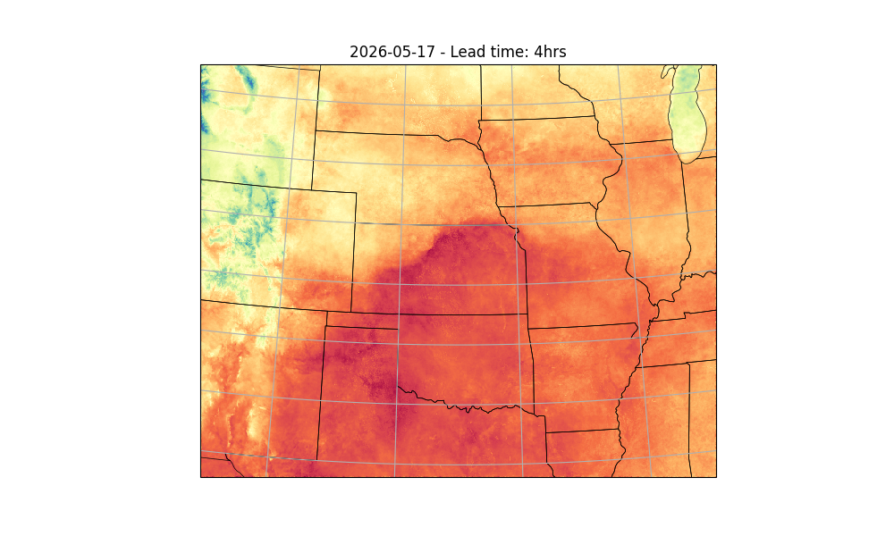

Note
Go to the end to download the full example code.
Running StormCast Inference#
Basic StormCast inference workflow.
This example will demonstrate how to run a simple inference workflow to generate a basic determinstic forecast using StormCast. For details about the stormcast model, see
# /// script
# dependencies = [
# "earth2studio[data,stormcast] @ git+https://github.com/NVIDIA/earth2studio.git",
# "cartopy",
# ]
# ///
Set Up#
All workflows inside Earth2Studio require constructed components to be
handed to them. In this example, let’s take a look at the most basic:
earth2studio.run.deterministic().
Thus, we need the following:
Prognostic Model: Use the built in StormCast Model
earth2studio.models.px.StormCast.Datasource: Pull data from the HRRR data api
earth2studio.data.HRRR.IO Backend: Let’s save the outputs into a Zarr store
earth2studio.io.ZarrBackend.
StormCast also requires a conditioning data source. We use a forecast data source here,
GFS_FX earth2studio.data.GFS_FX which is the default, but a non-forecast
data source such as ARCO could also be used with appropriate time stamps.
from datetime import datetime, timedelta
from loguru import logger
from tqdm import tqdm
logger.remove()
logger.add(lambda msg: tqdm.write(msg, end=""), colorize=True)
import os
os.makedirs("outputs", exist_ok=True)
from dotenv import load_dotenv
load_dotenv() # TODO: make common example prep function
from earth2studio.data import HRRR
from earth2studio.io import ZarrBackend
from earth2studio.models.px import StormCast
# Load the default model package which downloads the check point from NGC
# Use the default conditioning data source GFS_FX
package = StormCast.load_default_package()
model = StormCast.load_model(package)
# Create the data source
data = HRRR()
# Create the IO handler, store in memory
io = ZarrBackend()
Downloading config.json: 0%| | 0.00/40.0 [00:00<?, ?B/s]
Downloading config.json: 100%|██████████| 40.0/40.0 [00:00<00:00, 209B/s]
Downloading config.json: 100%|██████████| 40.0/40.0 [00:00<00:00, 208B/s]
Downloading model.yaml: 0%| | 0.00/2.64k [00:00<?, ?B/s]
Downloading model.yaml: 100%|██████████| 2.64k/2.64k [00:00<00:00, 13.3kB/s]
Downloading model.yaml: 100%|██████████| 2.64k/2.64k [00:00<00:00, 13.2kB/s]
Downloading StormCastUNet.0.0.mdlus: 0%| | 0.00/300M [00:00<?, ?B/s]
Downloading StormCastUNet.0.0.mdlus: 3%|▎ | 10.0M/300M [00:00<00:11, 25.9MB/s]
Downloading StormCastUNet.0.0.mdlus: 7%|▋ | 20.0M/300M [00:00<00:06, 44.6MB/s]
Downloading StormCastUNet.0.0.mdlus: 10%|█ | 30.0M/300M [00:00<00:05, 53.9MB/s]
Downloading StormCastUNet.0.0.mdlus: 13%|█▎ | 40.0M/300M [00:00<00:04, 62.8MB/s]
Downloading StormCastUNet.0.0.mdlus: 17%|█▋ | 50.0M/300M [00:00<00:03, 70.0MB/s]
Downloading StormCastUNet.0.0.mdlus: 20%|██ | 60.0M/300M [00:01<00:03, 75.8MB/s]
Downloading StormCastUNet.0.0.mdlus: 23%|██▎ | 70.0M/300M [00:01<00:03, 76.1MB/s]
Downloading StormCastUNet.0.0.mdlus: 27%|██▋ | 80.0M/300M [00:01<00:02, 83.1MB/s]
Downloading StormCastUNet.0.0.mdlus: 30%|███ | 90.0M/300M [00:01<00:02, 83.3MB/s]
Downloading StormCastUNet.0.0.mdlus: 33%|███▎ | 100M/300M [00:01<00:02, 87.2MB/s]
Downloading StormCastUNet.0.0.mdlus: 37%|███▋ | 110M/300M [00:01<00:02, 87.7MB/s]
Downloading StormCastUNet.0.0.mdlus: 40%|████ | 120M/300M [00:01<00:02, 88.5MB/s]
Downloading StormCastUNet.0.0.mdlus: 43%|████▎ | 130M/300M [00:01<00:02, 88.4MB/s]
Downloading StormCastUNet.0.0.mdlus: 47%|████▋ | 140M/300M [00:01<00:01, 88.7MB/s]
Downloading StormCastUNet.0.0.mdlus: 50%|█████ | 150M/300M [00:02<00:01, 86.3MB/s]
Downloading StormCastUNet.0.0.mdlus: 53%|█████▎ | 160M/300M [00:02<00:01, 90.3MB/s]
Downloading StormCastUNet.0.0.mdlus: 57%|█████▋ | 170M/300M [00:02<00:01, 89.5MB/s]
Downloading StormCastUNet.0.0.mdlus: 60%|██████ | 180M/300M [00:02<00:01, 89.6MB/s]
Downloading StormCastUNet.0.0.mdlus: 63%|██████▎ | 190M/300M [00:02<00:01, 89.6MB/s]
Downloading StormCastUNet.0.0.mdlus: 67%|██████▋ | 200M/300M [00:02<00:01, 89.6MB/s]
Downloading StormCastUNet.0.0.mdlus: 70%|███████ | 210M/300M [00:02<00:01, 89.2MB/s]
Downloading StormCastUNet.0.0.mdlus: 73%|███████▎ | 220M/300M [00:02<00:00, 89.1MB/s]
Downloading StormCastUNet.0.0.mdlus: 77%|███████▋ | 230M/300M [00:03<00:00, 89.5MB/s]
Downloading StormCastUNet.0.0.mdlus: 80%|████████ | 240M/300M [00:03<00:00, 89.4MB/s]
Downloading StormCastUNet.0.0.mdlus: 83%|████████▎ | 250M/300M [00:03<00:00, 89.3MB/s]
Downloading StormCastUNet.0.0.mdlus: 87%|████████▋ | 260M/300M [00:03<00:00, 89.3MB/s]
Downloading StormCastUNet.0.0.mdlus: 90%|█████████ | 270M/300M [00:03<00:00, 88.9MB/s]
Downloading StormCastUNet.0.0.mdlus: 93%|█████████▎| 280M/300M [00:03<00:00, 89.2MB/s]
Downloading StormCastUNet.0.0.mdlus: 97%|█████████▋| 290M/300M [00:03<00:00, 89.4MB/s]
Downloading StormCastUNet.0.0.mdlus: 100%|██████████| 300M/300M [00:03<00:00, 90.0MB/s]
Downloading StormCastUNet.0.0.mdlus: 100%|██████████| 300M/300M [00:03<00:00, 81.7MB/s]
Downloading EDMPrecond.0.0.mdlus: 0%| | 0.00/462M [00:00<?, ?B/s]
Downloading EDMPrecond.0.0.mdlus: 2%|▏ | 10.0M/462M [00:00<00:13, 34.4MB/s]
Downloading EDMPrecond.0.0.mdlus: 4%|▍ | 20.0M/462M [00:00<00:08, 53.6MB/s]
Downloading EDMPrecond.0.0.mdlus: 6%|▋ | 30.0M/462M [00:00<00:06, 65.6MB/s]
Downloading EDMPrecond.0.0.mdlus: 9%|▊ | 40.0M/462M [00:00<00:06, 72.8MB/s]
Downloading EDMPrecond.0.0.mdlus: 11%|█ | 50.0M/462M [00:00<00:05, 77.7MB/s]
Downloading EDMPrecond.0.0.mdlus: 13%|█▎ | 60.0M/462M [00:00<00:05, 80.9MB/s]
Downloading EDMPrecond.0.0.mdlus: 15%|█▌ | 70.0M/462M [00:01<00:04, 83.1MB/s]
Downloading EDMPrecond.0.0.mdlus: 17%|█▋ | 80.0M/462M [00:01<00:04, 84.7MB/s]
Downloading EDMPrecond.0.0.mdlus: 19%|█▉ | 90.0M/462M [00:01<00:04, 85.7MB/s]
Downloading EDMPrecond.0.0.mdlus: 22%|██▏ | 100M/462M [00:01<00:04, 86.3MB/s]
Downloading EDMPrecond.0.0.mdlus: 24%|██▍ | 110M/462M [00:01<00:04, 87.2MB/s]
Downloading EDMPrecond.0.0.mdlus: 26%|██▌ | 120M/462M [00:01<00:04, 87.5MB/s]
Downloading EDMPrecond.0.0.mdlus: 28%|██▊ | 130M/462M [00:01<00:03, 87.7MB/s]
Downloading EDMPrecond.0.0.mdlus: 30%|███ | 140M/462M [00:01<00:03, 87.4MB/s]
Downloading EDMPrecond.0.0.mdlus: 32%|███▏ | 150M/462M [00:01<00:03, 87.7MB/s]
Downloading EDMPrecond.0.0.mdlus: 35%|███▍ | 160M/462M [00:02<00:03, 87.5MB/s]
Downloading EDMPrecond.0.0.mdlus: 37%|███▋ | 170M/462M [00:02<00:03, 88.3MB/s]
Downloading EDMPrecond.0.0.mdlus: 39%|███▉ | 180M/462M [00:02<00:03, 88.2MB/s]
Downloading EDMPrecond.0.0.mdlus: 41%|████ | 190M/462M [00:02<00:03, 88.0MB/s]
Downloading EDMPrecond.0.0.mdlus: 43%|████▎ | 200M/462M [00:02<00:03, 88.3MB/s]
Downloading EDMPrecond.0.0.mdlus: 45%|████▌ | 210M/462M [00:02<00:03, 88.0MB/s]
Downloading EDMPrecond.0.0.mdlus: 48%|████▊ | 220M/462M [00:02<00:02, 87.8MB/s]
Downloading EDMPrecond.0.0.mdlus: 50%|████▉ | 230M/462M [00:02<00:02, 88.2MB/s]
Downloading EDMPrecond.0.0.mdlus: 52%|█████▏ | 240M/462M [00:03<00:02, 88.2MB/s]
Downloading EDMPrecond.0.0.mdlus: 54%|█████▍ | 250M/462M [00:03<00:02, 87.8MB/s]
Downloading EDMPrecond.0.0.mdlus: 56%|█████▋ | 260M/462M [00:03<00:02, 88.1MB/s]
Downloading EDMPrecond.0.0.mdlus: 58%|█████▊ | 270M/462M [00:03<00:02, 88.2MB/s]
Downloading EDMPrecond.0.0.mdlus: 61%|██████ | 280M/462M [00:03<00:02, 88.0MB/s]
Downloading EDMPrecond.0.0.mdlus: 63%|██████▎ | 290M/462M [00:03<00:02, 88.0MB/s]
Downloading EDMPrecond.0.0.mdlus: 65%|██████▍ | 300M/462M [00:03<00:01, 88.1MB/s]
Downloading EDMPrecond.0.0.mdlus: 67%|██████▋ | 310M/462M [00:03<00:01, 88.3MB/s]
Downloading EDMPrecond.0.0.mdlus: 69%|██████▉ | 320M/462M [00:03<00:01, 88.2MB/s]
Downloading EDMPrecond.0.0.mdlus: 71%|███████▏ | 330M/462M [00:04<00:01, 88.1MB/s]
Downloading EDMPrecond.0.0.mdlus: 74%|███████▎ | 340M/462M [00:04<00:01, 88.1MB/s]
Downloading EDMPrecond.0.0.mdlus: 76%|███████▌ | 350M/462M [00:04<00:01, 87.8MB/s]
Downloading EDMPrecond.0.0.mdlus: 78%|███████▊ | 360M/462M [00:04<00:01, 88.2MB/s]
Downloading EDMPrecond.0.0.mdlus: 80%|████████ | 370M/462M [00:04<00:01, 88.0MB/s]
Downloading EDMPrecond.0.0.mdlus: 82%|████████▏ | 380M/462M [00:04<00:00, 88.1MB/s]
Downloading EDMPrecond.0.0.mdlus: 84%|████████▍ | 390M/462M [00:04<00:00, 88.1MB/s]
Downloading EDMPrecond.0.0.mdlus: 87%|████████▋ | 400M/462M [00:04<00:00, 88.1MB/s]
Downloading EDMPrecond.0.0.mdlus: 89%|████████▊ | 410M/462M [00:05<00:00, 87.9MB/s]
Downloading EDMPrecond.0.0.mdlus: 91%|█████████ | 420M/462M [00:05<00:00, 88.1MB/s]
Downloading EDMPrecond.0.0.mdlus: 93%|█████████▎| 430M/462M [00:05<00:00, 88.3MB/s]
Downloading EDMPrecond.0.0.mdlus: 95%|█████████▌| 440M/462M [00:05<00:00, 88.2MB/s]
Downloading EDMPrecond.0.0.mdlus: 97%|█████████▋| 450M/462M [00:05<00:00, 87.7MB/s]
Downloading EDMPrecond.0.0.mdlus: 100%|█████████▉| 460M/462M [00:05<00:00, 87.9MB/s]
Downloading EDMPrecond.0.0.mdlus: 100%|██████████| 462M/462M [00:05<00:00, 85.3MB/s]
Downloading metadata.zarr.zip: 0%| | 0.00/1.71M [00:00<?, ?B/s]
Downloading metadata.zarr.zip: 100%|██████████| 1.71M/1.71M [00:00<00:00, 12.8MB/s]
Downloading metadata.zarr.zip: 100%|██████████| 1.71M/1.71M [00:00<00:00, 12.7MB/s]
Execute the Workflow#
With all components initialized, running the workflow is a single line of Python code. Workflow will return the provided IO object back to the user, which can be used to then post process. Some have additional APIs that can be handy for post-processing or saving to file. Check the API docs for more information.
For the forecast we will predict for 4 hours
import earth2studio.run as run
nsteps = 4
today = datetime.today() - timedelta(days=1)
date = today.isoformat().split("T")[0]
io = run.deterministic([date], nsteps, model, data, io)
print(io.root.tree())
2026-05-18 02:23:23.284 | INFO | earth2studio.run:deterministic:78 - Running simple workflow!
2026-05-18 02:23:23.285 | INFO | earth2studio.run:deterministic:85 - Inference device: cuda
Fetching HRRR data: 0%| | 0/99 [00:00<?, ?it/s]
2026-05-18 02:23:24.510 | DEBUG | earth2studio.data.hrrr:fetch_array:484 - Fetching HRRR grib file: noaa-hrrr-bdp-pds/hrrr.20260517/conus/hrrr.t00z.wrfnatf00.grib2 36155251-1096924
Fetching HRRR data: 0%| | 0/99 [00:00<?, ?it/s]
2026-05-18 02:23:24.513 | DEBUG | earth2studio.data.hrrr:fetch_array:484 - Fetching HRRR grib file: noaa-hrrr-bdp-pds/hrrr.20260517/conus/hrrr.t00z.wrfnatf00.grib2 7379830-1442556
Fetching HRRR data: 0%| | 0/99 [00:00<?, ?it/s]
2026-05-18 02:23:24.515 | DEBUG | earth2studio.data.hrrr:fetch_array:484 - Fetching HRRR grib file: noaa-hrrr-bdp-pds/hrrr.20260517/conus/hrrr.t00z.wrfnatf00.grib2 103042741-1089320
Fetching HRRR data: 0%| | 0/99 [00:00<?, ?it/s]
2026-05-18 02:23:24.516 | DEBUG | earth2studio.data.hrrr:fetch_array:484 - Fetching HRRR grib file: noaa-hrrr-bdp-pds/hrrr.20260517/conus/hrrr.t00z.wrfnatf00.grib2 364573484-1459670
Fetching HRRR data: 0%| | 0/99 [00:00<?, ?it/s]
2026-05-18 02:23:24.518 | DEBUG | earth2studio.data.hrrr:fetch_array:484 - Fetching HRRR grib file: noaa-hrrr-bdp-pds/hrrr.20260517/conus/hrrr.t00z.wrfnatf00.grib2 106559686-1025807
Fetching HRRR data: 0%| | 0/99 [00:00<?, ?it/s]
2026-05-18 02:23:24.519 | DEBUG | earth2studio.data.hrrr:fetch_array:484 - Fetching HRRR grib file: noaa-hrrr-bdp-pds/hrrr.20260517/conus/hrrr.t00z.wrfnatf00.grib2 174115069-1232949
Fetching HRRR data: 0%| | 0/99 [00:00<?, ?it/s]
2026-05-18 02:23:24.521 | DEBUG | earth2studio.data.hrrr:fetch_array:484 - Fetching HRRR grib file: noaa-hrrr-bdp-pds/hrrr.20260517/conus/hrrr.t00z.wrfnatf00.grib2 6230332-1149498
Fetching HRRR data: 0%| | 0/99 [00:00<?, ?it/s]
2026-05-18 02:23:24.523 | DEBUG | earth2studio.data.hrrr:fetch_array:484 - Fetching HRRR grib file: noaa-hrrr-bdp-pds/hrrr.20260517/conus/hrrr.t00z.wrfnatf00.grib2 49826543-1073587
Fetching HRRR data: 0%| | 0/99 [00:00<?, ?it/s]
2026-05-18 02:23:24.524 | DEBUG | earth2studio.data.hrrr:fetch_array:484 - Fetching HRRR grib file: noaa-hrrr-bdp-pds/hrrr.20260517/conus/hrrr.t00z.wrfnatf00.grib2 71875362-2421974
Fetching HRRR data: 0%| | 0/99 [00:00<?, ?it/s]
2026-05-18 02:23:24.526 | DEBUG | earth2studio.data.hrrr:fetch_array:484 - Fetching HRRR grib file: noaa-hrrr-bdp-pds/hrrr.20260517/conus/hrrr.t00z.wrfnatf00.grib2 63595478-1049722
Fetching HRRR data: 0%| | 0/99 [00:00<?, ?it/s]
2026-05-18 02:23:24.527 | DEBUG | earth2studio.data.hrrr:fetch_array:484 - Fetching HRRR grib file: noaa-hrrr-bdp-pds/hrrr.20260517/conus/hrrr.t00z.wrfnatf00.grib2 132900363-1391637
Fetching HRRR data: 0%| | 0/99 [00:00<?, ?it/s]
2026-05-18 02:23:24.529 | DEBUG | earth2studio.data.hrrr:fetch_array:484 - Fetching HRRR grib file: noaa-hrrr-bdp-pds/hrrr.20260517/conus/hrrr.t00z.wrfnatf00.grib2 134292000-980854
Fetching HRRR data: 0%| | 0/99 [00:00<?, ?it/s]
2026-05-18 02:23:24.530 | DEBUG | earth2studio.data.hrrr:fetch_array:484 - Fetching HRRR grib file: noaa-hrrr-bdp-pds/hrrr.20260517/conus/hrrr.t00z.wrfnatf00.grib2 20554215-1385382
Fetching HRRR data: 0%| | 0/99 [00:00<?, ?it/s]
2026-05-18 02:23:24.532 | DEBUG | earth2studio.data.hrrr:fetch_array:484 - Fetching HRRR grib file: noaa-hrrr-bdp-pds/hrrr.20260517/conus/hrrr.t00z.wrfnatf00.grib2 92130182-1025555
Fetching HRRR data: 0%| | 0/99 [00:00<?, ?it/s]
2026-05-18 02:23:24.533 | DEBUG | earth2studio.data.hrrr:fetch_array:484 - Fetching HRRR grib file: noaa-hrrr-bdp-pds/hrrr.20260517/conus/hrrr.t00z.wrfnatf00.grib2 75383152-1360932
Fetching HRRR data: 0%| | 0/99 [00:00<?, ?it/s]
2026-05-18 02:23:24.535 | DEBUG | earth2studio.data.hrrr:fetch_array:484 - Fetching HRRR grib file: noaa-hrrr-bdp-pds/hrrr.20260517/conus/hrrr.t00z.wrfnatf00.grib2 43956484-2385038
Fetching HRRR data: 0%| | 0/99 [00:00<?, ?it/s]
2026-05-18 02:23:24.536 | DEBUG | earth2studio.data.hrrr:fetch_array:484 - Fetching HRRR grib file: noaa-hrrr-bdp-pds/hrrr.20260517/conus/hrrr.t00z.wrfsfcf00.grib2 46617332-2381615
Fetching HRRR data: 0%| | 0/99 [00:00<?, ?it/s]
2026-05-18 02:23:24.538 | DEBUG | earth2studio.data.hrrr:fetch_array:484 - Fetching HRRR grib file: noaa-hrrr-bdp-pds/hrrr.20260517/conus/hrrr.t00z.wrfnatf00.grib2 57737344-2404070
Fetching HRRR data: 0%| | 0/99 [00:00<?, ?it/s]
2026-05-18 02:23:24.539 | DEBUG | earth2studio.data.hrrr:fetch_array:484 - Fetching HRRR grib file: noaa-hrrr-bdp-pds/hrrr.20260517/conus/hrrr.t00z.wrfsfcf00.grib2 26175760-635097
Fetching HRRR data: 0%| | 0/99 [00:00<?, ?it/s]
2026-05-18 02:23:24.541 | DEBUG | earth2studio.data.hrrr:fetch_array:484 - Fetching HRRR grib file: noaa-hrrr-bdp-pds/hrrr.20260517/conus/hrrr.t00z.wrfnatf00.grib2 317121094-841114
Fetching HRRR data: 0%| | 0/99 [00:00<?, ?it/s]
2026-05-18 02:23:24.553 | DEBUG | earth2studio.data.hrrr:fetch_array:484 - Fetching HRRR grib file: noaa-hrrr-bdp-pds/hrrr.20260517/conus/hrrr.t00z.wrfnatf00.grib2 176292828-972647
Fetching HRRR data: 0%| | 0/99 [00:00<?, ?it/s]
2026-05-18 02:23:24.554 | DEBUG | earth2studio.data.hrrr:fetch_array:484 - Fetching HRRR grib file: noaa-hrrr-bdp-pds/hrrr.20260517/conus/hrrr.t00z.wrfnatf00.grib2 143449800-2474905
Fetching HRRR data: 0%| | 0/99 [00:00<?, ?it/s]
2026-05-18 02:23:24.555 | DEBUG | earth2studio.data.hrrr:fetch_array:484 - Fetching HRRR grib file: noaa-hrrr-bdp-pds/hrrr.20260517/conus/hrrr.t00z.wrfnatf00.grib2 3959583-2270749
Fetching HRRR data: 0%| | 0/99 [00:00<?, ?it/s]
2026-05-18 02:23:24.556 | DEBUG | earth2studio.data.hrrr:fetch_array:484 - Fetching HRRR grib file: noaa-hrrr-bdp-pds/hrrr.20260517/conus/hrrr.t00z.wrfnatf00.grib2 26306766-2197907
Fetching HRRR data: 0%| | 0/99 [00:00<?, ?it/s]
2026-05-18 02:23:24.557 | DEBUG | earth2studio.data.hrrr:fetch_array:484 - Fetching HRRR grib file: noaa-hrrr-bdp-pds/hrrr.20260517/conus/hrrr.t00z.wrfnatf00.grib2 135272854-1015130
Fetching HRRR data: 0%| | 0/99 [00:00<?, ?it/s]
2026-05-18 02:23:24.558 | DEBUG | earth2studio.data.hrrr:fetch_array:484 - Fetching HRRR grib file: noaa-hrrr-bdp-pds/hrrr.20260517/conus/hrrr.t00z.wrfnatf00.grib2 33713515-1335972
Fetching HRRR data: 0%| | 0/99 [00:00<?, ?it/s]
2026-05-18 02:23:24.559 | DEBUG | earth2studio.data.hrrr:fetch_array:484 - Fetching HRRR grib file: noaa-hrrr-bdp-pds/hrrr.20260517/conus/hrrr.t00z.wrfnatf00.grib2 13146736-2198097
Fetching HRRR data: 0%| | 0/99 [00:00<?, ?it/s]
2026-05-18 02:23:24.560 | DEBUG | earth2studio.data.hrrr:fetch_array:484 - Fetching HRRR grib file: noaa-hrrr-bdp-pds/hrrr.20260517/conus/hrrr.t00z.wrfnatf00.grib2 48749362-1077181
Fetching HRRR data: 0%| | 0/99 [00:00<?, ?it/s]
2026-05-18 02:23:24.561 | DEBUG | earth2studio.data.hrrr:fetch_array:484 - Fetching HRRR grib file: noaa-hrrr-bdp-pds/hrrr.20260517/conus/hrrr.t00z.wrfnatf00.grib2 199322740-953598
Fetching HRRR data: 0%| | 0/99 [00:00<?, ?it/s]
2026-05-18 02:23:24.561 | DEBUG | earth2studio.data.hrrr:fetch_array:484 - Fetching HRRR grib file: noaa-hrrr-bdp-pds/hrrr.20260517/conus/hrrr.t00z.wrfnatf00.grib2 8822386-1108674
Fetching HRRR data: 0%| | 0/99 [00:00<?, ?it/s]
2026-05-18 02:23:24.562 | DEBUG | earth2studio.data.hrrr:fetch_array:484 - Fetching HRRR grib file: noaa-hrrr-bdp-pds/hrrr.20260517/conus/hrrr.t00z.wrfnatf00.grib2 115088331-2468909
Fetching HRRR data: 0%| | 0/99 [00:00<?, ?it/s]
2026-05-18 02:23:24.562 | DEBUG | earth2studio.data.hrrr:fetch_array:484 - Fetching HRRR grib file: noaa-hrrr-bdp-pds/hrrr.20260517/conus/hrrr.t00z.wrfnatf00.grib2 165903001-2102726
Fetching HRRR data: 0%| | 0/99 [00:00<?, ?it/s]
2026-05-18 02:23:24.563 | DEBUG | earth2studio.data.hrrr:fetch_array:484 - Fetching HRRR grib file: noaa-hrrr-bdp-pds/hrrr.20260517/conus/hrrr.t00z.wrfnatf00.grib2 314068906-664786
Fetching HRRR data: 0%| | 0/99 [00:00<?, ?it/s]
2026-05-18 02:23:24.564 | DEBUG | earth2studio.data.hrrr:fetch_array:484 - Fetching HRRR grib file: noaa-hrrr-bdp-pds/hrrr.20260517/conus/hrrr.t00z.wrfnatf00.grib2 192146826-2264527
Fetching HRRR data: 0%| | 0/99 [00:00<?, ?it/s]
2026-05-18 02:23:24.564 | DEBUG | earth2studio.data.hrrr:fetch_array:484 - Fetching HRRR grib file: noaa-hrrr-bdp-pds/hrrr.20260517/conus/hrrr.t00z.wrfnatf00.grib2 60141414-1084494
Fetching HRRR data: 0%| | 0/99 [00:00<?, ?it/s]
2026-05-18 02:23:24.565 | DEBUG | earth2studio.data.hrrr:fetch_array:484 - Fetching HRRR grib file: noaa-hrrr-bdp-pds/hrrr.20260517/conus/hrrr.t00z.wrfnatf00.grib2 124323329-2179093
Fetching HRRR data: 0%| | 0/99 [00:00<?, ?it/s]
2026-05-18 02:23:24.565 | DEBUG | earth2studio.data.hrrr:fetch_array:484 - Fetching HRRR grib file: noaa-hrrr-bdp-pds/hrrr.20260517/conus/hrrr.t00z.wrfnatf00.grib2 200276338-1125537
Fetching HRRR data: 0%| | 0/99 [00:00<?, ?it/s]
2026-05-18 02:23:24.566 | DEBUG | earth2studio.data.hrrr:fetch_array:484 - Fetching HRRR grib file: noaa-hrrr-bdp-pds/hrrr.20260517/conus/hrrr.t00z.wrfnatf00.grib2 0-2198391
Fetching HRRR data: 0%| | 0/99 [00:00<?, ?it/s]
2026-05-18 02:23:24.566 | DEBUG | earth2studio.data.hrrr:fetch_array:484 - Fetching HRRR grib file: noaa-hrrr-bdp-pds/hrrr.20260517/conus/hrrr.t00z.wrfnatf00.grib2 62554729-1040749
Fetching HRRR data: 0%| | 0/99 [00:00<?, ?it/s]
2026-05-18 02:23:24.567 | DEBUG | earth2studio.data.hrrr:fetch_array:484 - Fetching HRRR grib file: noaa-hrrr-bdp-pds/hrrr.20260517/conus/hrrr.t00z.wrfsfcf00.grib2 44235717-2381615
Fetching HRRR data: 0%| | 0/99 [00:00<?, ?it/s]
2026-05-18 02:23:24.568 | DEBUG | earth2studio.data.hrrr:fetch_array:484 - Fetching HRRR grib file: noaa-hrrr-bdp-pds/hrrr.20260517/conus/hrrr.t00z.wrfnatf00.grib2 35049487-1105764
Fetching HRRR data: 0%| | 0/99 [00:00<?, ?it/s]
2026-05-18 02:23:24.568 | DEBUG | earth2studio.data.hrrr:fetch_array:484 - Fetching HRRR grib file: noaa-hrrr-bdp-pds/hrrr.20260517/conus/hrrr.t00z.wrfnatf00.grib2 368605601-858790
Fetching HRRR data: 0%| | 0/99 [00:00<?, ?it/s]
2026-05-18 02:23:24.569 | DEBUG | earth2studio.data.hrrr:fetch_array:484 - Fetching HRRR grib file: noaa-hrrr-bdp-pds/hrrr.20260517/conus/hrrr.t00z.wrfnatf00.grib2 109883358-2200984
Fetching HRRR data: 0%| | 0/99 [00:00<?, ?it/s]
2026-05-18 02:23:24.569 | DEBUG | earth2studio.data.hrrr:fetch_array:484 - Fetching HRRR grib file: noaa-hrrr-bdp-pds/hrrr.20260517/conus/hrrr.t00z.wrfnatf00.grib2 91138327-991855
Fetching HRRR data: 0%| | 0/99 [00:00<?, ?it/s]
2026-05-18 02:23:24.570 | DEBUG | earth2studio.data.hrrr:fetch_array:484 - Fetching HRRR grib file: noaa-hrrr-bdp-pds/hrrr.20260517/conus/hrrr.t00z.wrfsfcf00.grib2 37093664-1245444
Fetching HRRR data: 0%| | 0/99 [00:00<?, ?it/s]
2026-05-18 02:23:24.571 | DEBUG | earth2studio.data.hrrr:fetch_array:484 - Fetching HRRR grib file: noaa-hrrr-bdp-pds/hrrr.20260517/conus/hrrr.t00z.wrfnatf00.grib2 53133061-2198451
Fetching HRRR data: 0%| | 0/99 [00:00<?, ?it/s]
2026-05-18 02:23:24.571 | DEBUG | earth2studio.data.hrrr:fetch_array:484 - Fetching HRRR grib file: noaa-hrrr-bdp-pds/hrrr.20260517/conus/hrrr.t00z.wrfnatf00.grib2 88657191-1088919
Fetching HRRR data: 0%| | 0/99 [00:00<?, ?it/s]
2026-05-18 02:23:24.572 | DEBUG | earth2studio.data.hrrr:fetch_array:484 - Fetching HRRR grib file: noaa-hrrr-bdp-pds/hrrr.20260517/conus/hrrr.t00z.wrfnatf00.grib2 95364625-2202066
Fetching HRRR data: 0%| | 0/99 [00:00<?, ?it/s]
2026-05-18 02:23:24.572 | DEBUG | earth2studio.data.hrrr:fetch_array:484 - Fetching HRRR grib file: noaa-hrrr-bdp-pds/hrrr.20260517/conus/hrrr.t00z.wrfnatf00.grib2 148251560-969593
Fetching HRRR data: 0%| | 0/99 [00:00<?, ?it/s]
2026-05-18 02:23:24.573 | DEBUG | earth2studio.data.hrrr:fetch_array:484 - Fetching HRRR grib file: noaa-hrrr-bdp-pds/hrrr.20260517/conus/hrrr.t00z.wrfnatf00.grib2 100587930-2454811
Fetching HRRR data: 0%| | 0/99 [00:00<?, ?it/s]
2026-05-18 02:23:24.574 | DEBUG | earth2studio.data.hrrr:fetch_array:484 - Fetching HRRR grib file: noaa-hrrr-bdp-pds/hrrr.20260517/conus/hrrr.t00z.wrfnatf00.grib2 129387044-2475349
Fetching HRRR data: 0%| | 0/99 [00:00<?, ?it/s]
2026-05-18 02:23:24.574 | DEBUG | earth2studio.data.hrrr:fetch_array:484 - Fetching HRRR grib file: noaa-hrrr-bdp-pds/hrrr.20260517/conus/hrrr.t00z.wrfnatf00.grib2 39489851-2197758
Fetching HRRR data: 0%| | 0/99 [00:00<?, ?it/s]
2026-05-18 02:23:24.575 | DEBUG | earth2studio.data.hrrr:fetch_array:484 - Fetching HRRR grib file: noaa-hrrr-bdp-pds/hrrr.20260517/conus/hrrr.t00z.wrfnatf00.grib2 175348018-944810
Fetching HRRR data: 0%| | 0/99 [00:00<?, ?it/s]
2026-05-18 02:23:24.575 | DEBUG | earth2studio.data.hrrr:fetch_array:484 - Fetching HRRR grib file: noaa-hrrr-bdp-pds/hrrr.20260517/conus/hrrr.t00z.wrfnatf00.grib2 81122133-2200301
Fetching HRRR data: 0%| | 0/99 [00:00<?, ?it/s]
2026-05-18 02:23:24.576 | DEBUG | earth2studio.data.hrrr:fetch_array:484 - Fetching HRRR grib file: noaa-hrrr-bdp-pds/hrrr.20260517/conus/hrrr.t00z.wrfnatf00.grib2 316292188-828906
Fetching HRRR data: 0%| | 0/99 [00:00<?, ?it/s]
2026-05-18 02:23:24.576 | DEBUG | earth2studio.data.hrrr:fetch_array:484 - Fetching HRRR grib file: noaa-hrrr-bdp-pds/hrrr.20260517/conus/hrrr.t00z.wrfnatf00.grib2 66988306-2199300
Fetching HRRR data: 0%| | 0/99 [00:00<?, ?it/s]
2026-05-18 02:23:24.577 | DEBUG | earth2studio.data.hrrr:fetch_array:484 - Fetching HRRR grib file: noaa-hrrr-bdp-pds/hrrr.20260517/conus/hrrr.t00z.wrfnatf00.grib2 202315421-938914
Fetching HRRR data: 0%| | 0/99 [00:00<?, ?it/s]
2026-05-18 02:23:24.578 | DEBUG | earth2studio.data.hrrr:fetch_array:484 - Fetching HRRR grib file: noaa-hrrr-bdp-pds/hrrr.20260517/conus/hrrr.t00z.wrfnatf00.grib2 86216289-2440902
Fetching HRRR data: 0%| | 0/99 [00:00<?, ?it/s]
2026-05-18 02:23:24.578 | DEBUG | earth2studio.data.hrrr:fetch_array:484 - Fetching HRRR grib file: noaa-hrrr-bdp-pds/hrrr.20260517/conus/hrrr.t00z.wrfnatf00.grib2 367748536-857065
Fetching HRRR data: 0%| | 0/99 [00:00<?, ?it/s]
2026-05-18 02:23:24.579 | DEBUG | earth2studio.data.hrrr:fetch_array:484 - Fetching HRRR grib file: noaa-hrrr-bdp-pds/hrrr.20260517/conus/hrrr.t00z.wrfnatf00.grib2 46341522-1090636
Fetching HRRR data: 0%| | 0/99 [00:00<?, ?it/s]
2026-05-18 02:23:24.579 | DEBUG | earth2studio.data.hrrr:fetch_array:484 - Fetching HRRR grib file: noaa-hrrr-bdp-pds/hrrr.20260517/conus/hrrr.t00z.wrfnatf00.grib2 262959423-840718
Fetching HRRR data: 0%| | 0/99 [00:00<?, ?it/s]
2026-05-18 02:23:24.580 | DEBUG | earth2studio.data.hrrr:fetch_array:484 - Fetching HRRR grib file: noaa-hrrr-bdp-pds/hrrr.20260517/conus/hrrr.t00z.wrfnatf00.grib2 89746110-1392217
Fetching HRRR data: 0%| | 0/99 [00:00<?, ?it/s]
2026-05-18 02:23:24.581 | DEBUG | earth2studio.data.hrrr:fetch_array:484 - Fetching HRRR grib file: noaa-hrrr-bdp-pds/hrrr.20260517/conus/hrrr.t00z.wrfnatf00.grib2 366684439-1064097
Fetching HRRR data: 0%| | 0/99 [00:00<?, ?it/s]
2026-05-18 02:23:24.581 | DEBUG | earth2studio.data.hrrr:fetch_array:484 - Fetching HRRR grib file: noaa-hrrr-bdp-pds/hrrr.20260517/conus/hrrr.t00z.wrfnatf00.grib2 261614903-1344520
Fetching HRRR data: 0%| | 0/99 [00:00<?, ?it/s]
2026-05-18 02:23:24.582 | DEBUG | earth2studio.data.hrrr:fetch_array:484 - Fetching HRRR grib file: noaa-hrrr-bdp-pds/hrrr.20260517/conus/hrrr.t00z.wrfnatf00.grib2 117557240-1068137
Fetching HRRR data: 0%| | 0/99 [00:00<?, ?it/s]
2026-05-18 02:23:24.582 | DEBUG | earth2studio.data.hrrr:fetch_array:484 - Fetching HRRR grib file: noaa-hrrr-bdp-pds/hrrr.20260517/conus/hrrr.t00z.wrfnatf00.grib2 145924705-1009647
Fetching HRRR data: 0%| | 0/99 [00:00<?, ?it/s]
2026-05-18 02:23:24.583 | DEBUG | earth2studio.data.hrrr:fetch_array:484 - Fetching HRRR grib file: noaa-hrrr-bdp-pds/hrrr.20260517/conus/hrrr.t00z.wrfnatf00.grib2 9931060-1098319
Fetching HRRR data: 0%| | 0/99 [00:00<?, ?it/s]
2026-05-18 02:23:24.583 | DEBUG | earth2studio.data.hrrr:fetch_array:484 - Fetching HRRR grib file: noaa-hrrr-bdp-pds/hrrr.20260517/conus/hrrr.t00z.wrfnatf00.grib2 30238480-2373896
Fetching HRRR data: 0%| | 0/99 [00:00<?, ?it/s]
2026-05-18 02:23:24.584 | DEBUG | earth2studio.data.hrrr:fetch_array:484 - Fetching HRRR grib file: noaa-hrrr-bdp-pds/hrrr.20260517/conus/hrrr.t00z.wrfnatf00.grib2 76744084-1008362
Fetching HRRR data: 0%| | 0/99 [00:00<?, ?it/s]
2026-05-18 02:23:24.585 | DEBUG | earth2studio.data.hrrr:fetch_array:484 - Fetching HRRR grib file: noaa-hrrr-bdp-pds/hrrr.20260517/conus/hrrr.t00z.wrfnatf00.grib2 17084560-2356432
Fetching HRRR data: 0%| | 0/99 [00:00<?, ?it/s]
2026-05-18 02:23:24.585 | DEBUG | earth2studio.data.hrrr:fetch_array:484 - Fetching HRRR grib file: noaa-hrrr-bdp-pds/hrrr.20260517/conus/hrrr.t00z.wrfnatf00.grib2 131862393-1037970
Fetching HRRR data: 0%| | 0/99 [00:00<?, ?it/s]
2026-05-18 02:23:24.586 | DEBUG | earth2studio.data.hrrr:fetch_array:484 - Fetching HRRR grib file: noaa-hrrr-bdp-pds/hrrr.20260517/conus/hrrr.t00z.wrfnatf00.grib2 258631126-2171708
Fetching HRRR data: 0%| | 0/99 [00:00<?, ?it/s]
2026-05-18 02:23:24.586 | DEBUG | earth2studio.data.hrrr:fetch_array:484 - Fetching HRRR grib file: noaa-hrrr-bdp-pds/hrrr.20260517/conus/hrrr.t00z.wrfnatf00.grib2 32612376-1101139
Fetching HRRR data: 0%| | 0/99 [00:00<?, ?it/s]
2026-05-18 02:23:24.587 | DEBUG | earth2studio.data.hrrr:fetch_array:484 - Fetching HRRR grib file: noaa-hrrr-bdp-pds/hrrr.20260517/conus/hrrr.t00z.wrfnatf00.grib2 196900206-2422534
Fetching HRRR data: 0%| | 0/99 [00:00<?, ?it/s]
2026-05-18 02:23:24.587 | DEBUG | earth2studio.data.hrrr:fetch_array:484 - Fetching HRRR grib file: noaa-hrrr-bdp-pds/hrrr.20260517/conus/hrrr.t00z.wrfnatf00.grib2 201401875-913546
Fetching HRRR data: 0%| | 0/99 [00:00<?, ?it/s]
2026-05-18 02:23:24.588 | DEBUG | earth2studio.data.hrrr:fetch_array:484 - Fetching HRRR grib file: noaa-hrrr-bdp-pds/hrrr.20260517/conus/hrrr.t00z.wrfnatf00.grib2 173131854-983215
Fetching HRRR data: 0%| | 0/99 [00:00<?, ?it/s]
2026-05-18 02:23:24.589 | DEBUG | earth2studio.data.hrrr:fetch_array:484 - Fetching HRRR grib file: noaa-hrrr-bdp-pds/hrrr.20260517/conus/hrrr.t00z.wrfnatf00.grib2 170673216-2458638
Fetching HRRR data: 0%| | 0/99 [00:00<?, ?it/s]
2026-05-18 02:23:24.589 | DEBUG | earth2studio.data.hrrr:fetch_array:484 - Fetching HRRR grib file: noaa-hrrr-bdp-pds/hrrr.20260517/conus/hrrr.t00z.wrfnatf00.grib2 312230506-1838400
Fetching HRRR data: 0%| | 0/99 [00:00<?, ?it/s]
2026-05-18 02:23:24.590 | DEBUG | earth2studio.data.hrrr:fetch_array:484 - Fetching HRRR grib file: noaa-hrrr-bdp-pds/hrrr.20260517/conus/hrrr.t00z.wrfnatf00.grib2 146934352-1317208
Fetching HRRR data: 0%| | 0/99 [00:00<?, ?it/s]
2026-05-18 02:23:24.590 | DEBUG | earth2studio.data.hrrr:fetch_array:484 - Fetching HRRR grib file: noaa-hrrr-bdp-pds/hrrr.20260517/conus/hrrr.t00z.wrfnatf00.grib2 21939597-1118738
Fetching HRRR data: 0%| | 0/99 [00:00<?, ?it/s]
2026-05-18 02:23:24.591 | DEBUG | earth2studio.data.hrrr:fetch_array:484 - Fetching HRRR grib file: noaa-hrrr-bdp-pds/hrrr.20260517/conus/hrrr.t00z.wrfnatf00.grib2 23058335-1113144
Fetching HRRR data: 0%| | 0/99 [00:00<?, ?it/s]
2026-05-18 02:23:24.591 | DEBUG | earth2studio.data.hrrr:fetch_array:484 - Fetching HRRR grib file: noaa-hrrr-bdp-pds/hrrr.20260517/conus/hrrr.t00z.wrfnatf00.grib2 263800141-845865
Fetching HRRR data: 0%| | 0/99 [00:00<?, ?it/s]
2026-05-18 02:23:24.592 | DEBUG | earth2studio.data.hrrr:fetch_array:484 - Fetching HRRR grib file: noaa-hrrr-bdp-pds/hrrr.20260517/conus/hrrr.t00z.wrfnatf00.grib2 118625377-1427153
Fetching HRRR data: 0%| | 0/99 [00:00<?, ?it/s]
2026-05-18 02:23:24.593 | DEBUG | earth2studio.data.hrrr:fetch_array:484 - Fetching HRRR grib file: noaa-hrrr-bdp-pds/hrrr.20260517/conus/hrrr.t00z.wrfnatf00.grib2 104132061-1433837
Fetching HRRR data: 0%| | 0/99 [00:00<?, ?it/s]
2026-05-18 02:23:24.593 | DEBUG | earth2studio.data.hrrr:fetch_array:484 - Fetching HRRR grib file: noaa-hrrr-bdp-pds/hrrr.20260517/conus/hrrr.t00z.wrfnatf00.grib2 47432158-1317204
Fetching HRRR data: 0%| | 0/99 [00:00<?, ?it/s]
2026-05-18 02:23:24.594 | DEBUG | earth2studio.data.hrrr:fetch_array:484 - Fetching HRRR grib file: noaa-hrrr-bdp-pds/hrrr.20260517/conus/hrrr.t00z.wrfnatf00.grib2 77752446-1032017
Fetching HRRR data: 0%| | 0/99 [00:00<?, ?it/s]
2026-05-18 02:23:24.594 | DEBUG | earth2studio.data.hrrr:fetch_array:484 - Fetching HRRR grib file: noaa-hrrr-bdp-pds/hrrr.20260517/conus/hrrr.t00z.wrfnatf00.grib2 260802834-812069
Fetching HRRR data: 0%| | 0/99 [00:00<?, ?it/s]
2026-05-18 02:23:24.595 | DEBUG | earth2studio.data.hrrr:fetch_array:484 - Fetching HRRR grib file: noaa-hrrr-bdp-pds/hrrr.20260517/conus/hrrr.t00z.wrfnatf00.grib2 314733692-1558496
Fetching HRRR data: 0%| | 0/99 [00:00<?, ?it/s]
2026-05-18 02:23:24.596 | DEBUG | earth2studio.data.hrrr:fetch_array:484 - Fetching HRRR grib file: noaa-hrrr-bdp-pds/hrrr.20260517/conus/hrrr.t00z.wrfnatf00.grib2 149221153-1003834
Fetching HRRR data: 0%| | 0/99 [00:00<?, ?it/s]
2026-05-18 02:23:24.596 | DEBUG | earth2studio.data.hrrr:fetch_array:484 - Fetching HRRR grib file: noaa-hrrr-bdp-pds/hrrr.20260517/conus/hrrr.t00z.wrfnatf00.grib2 61225908-1328821
Fetching HRRR data: 0%| | 0/99 [00:00<?, ?it/s]
2026-05-18 02:23:24.597 | DEBUG | earth2studio.data.hrrr:fetch_array:484 - Fetching HRRR grib file: noaa-hrrr-bdp-pds/hrrr.20260517/conus/hrrr.t00z.wrfsfcf00.grib2 0-402915
Fetching HRRR data: 0%| | 0/99 [00:00<?, ?it/s]
2026-05-18 02:23:24.597 | DEBUG | earth2studio.data.hrrr:fetch_array:484 - Fetching HRRR grib file: noaa-hrrr-bdp-pds/hrrr.20260517/conus/hrrr.t00z.wrfnatf00.grib2 105565898-993788
Fetching HRRR data: 0%| | 0/99 [00:00<?, ?it/s]
2026-05-18 02:23:24.598 | DEBUG | earth2studio.data.hrrr:fetch_array:484 - Fetching HRRR grib file: noaa-hrrr-bdp-pds/hrrr.20260517/conus/hrrr.t00z.wrfnatf00.grib2 74297336-1085816
Fetching HRRR data: 0%| | 0/99 [00:00<?, ?it/s]
2026-05-18 02:23:24.598 | DEBUG | earth2studio.data.hrrr:fetch_array:484 - Fetching HRRR grib file: noaa-hrrr-bdp-pds/hrrr.20260517/conus/hrrr.t00z.wrfnatf00.grib2 120052530-989538
Fetching HRRR data: 0%| | 0/99 [00:00<?, ?it/s]
2026-05-18 02:23:24.599 | DEBUG | earth2studio.data.hrrr:fetch_array:484 - Fetching HRRR grib file: noaa-hrrr-bdp-pds/hrrr.20260517/conus/hrrr.t00z.wrfnatf00.grib2 121042068-1020926
Fetching HRRR data: 0%| | 0/99 [00:00<?, ?it/s]
2026-05-18 02:23:24.599 | DEBUG | earth2studio.data.hrrr:fetch_array:484 - Fetching HRRR grib file: noaa-hrrr-bdp-pds/hrrr.20260517/conus/hrrr.t00z.wrfnatf00.grib2 19440992-1113223
Fetching HRRR data: 0%| | 0/99 [00:00<?, ?it/s]
2026-05-18 02:23:24.600 | DEBUG | earth2studio.data.hrrr:fetch_array:484 - Fetching HRRR grib file: noaa-hrrr-bdp-pds/hrrr.20260517/conus/hrrr.t00z.wrfnatf00.grib2 366033154-651285
Fetching HRRR data: 0%| | 0/99 [00:00<?, ?it/s]
2026-05-18 02:23:24.601 | DEBUG | earth2studio.data.hrrr:fetch_array:484 - Fetching HRRR grib file: noaa-hrrr-bdp-pds/hrrr.20260517/conus/hrrr.t00z.wrfnatf00.grib2 138486542-2164477
Fetching HRRR data: 0%| | 0/99 [00:00<?, ?it/s]
2026-05-18 02:23:24.601 | DEBUG | earth2studio.data.hrrr:fetch_array:484 - Fetching HRRR grib file: noaa-hrrr-bdp-pds/hrrr.20260517/conus/hrrr.t00z.wrfnatf00.grib2 254406918-2206912
Fetching HRRR data: 0%| | 0/99 [00:00<?, ?it/s]
Fetching HRRR data: 1%| | 1/99 [00:00<00:57, 1.70it/s]
Fetching HRRR data: 4%|▍ | 4/99 [00:00<00:14, 6.48it/s]
Fetching HRRR data: 7%|▋ | 7/99 [00:00<00:08, 11.13it/s]
Fetching HRRR data: 12%|█▏ | 12/99 [00:00<00:04, 18.00it/s]
Fetching HRRR data: 15%|█▌ | 15/99 [00:01<00:04, 17.94it/s]
Fetching HRRR data: 20%|██ | 20/99 [00:01<00:03, 24.41it/s]
Fetching HRRR data: 24%|██▍ | 24/99 [00:01<00:03, 24.26it/s]
Fetching HRRR data: 30%|███ | 30/99 [00:01<00:02, 30.46it/s]
Fetching HRRR data: 35%|███▌ | 35/99 [00:01<00:02, 29.62it/s]
Fetching HRRR data: 43%|████▎ | 43/99 [00:01<00:01, 38.77it/s]
Fetching HRRR data: 48%|████▊ | 48/99 [00:02<00:01, 38.06it/s]
Fetching HRRR data: 55%|█████▍ | 54/99 [00:02<00:01, 39.79it/s]
Fetching HRRR data: 61%|██████ | 60/99 [00:02<00:00, 42.45it/s]
Fetching HRRR data: 66%|██████▌ | 65/99 [00:02<00:00, 43.14it/s]
Fetching HRRR data: 72%|███████▏ | 71/99 [00:02<00:00, 43.34it/s]
Fetching HRRR data: 77%|███████▋ | 76/99 [00:02<00:00, 43.02it/s]
Fetching HRRR data: 82%|████████▏ | 81/99 [00:02<00:00, 43.69it/s]
Fetching HRRR data: 87%|████████▋ | 86/99 [00:02<00:00, 43.93it/s]
Fetching HRRR data: 92%|█████████▏| 91/99 [00:02<00:00, 45.50it/s]
Fetching HRRR data: 97%|█████████▋| 96/99 [00:03<00:00, 46.57it/s]
Fetching HRRR data: 100%|██████████| 99/99 [00:03<00:00, 31.98it/s]
2026-05-18 02:23:27.917 | SUCCESS | earth2studio.run:deterministic:109 - Fetched data from HRRR
2026-05-18 02:23:27.961 | INFO | earth2studio.run:deterministic:139 - Inference starting!
Running inference: 0%| | 0/5 [00:00<?, ?it/s]
Running inference: 20%|██ | 1/5 [00:01<00:05, 1.39s/it]
Fetching GFS data: 0%| | 0/26 [00:00<?, ?it/s]
2026-05-18 02:23:29.687 | DEBUG | earth2studio.data.gfs:fetch_array:367 - Fetching GFS grib file: noaa-gfs-bdp-pds/gfs.20260517/00/atmos/gfs.t00z.pgrb2.0p25.f000 260628500-729636
Fetching GFS data: 0%| | 0/26 [00:00<?, ?it/s]
Running inference: 20%|██ | 1/5 [00:01<00:05, 1.39s/it]
2026-05-18 02:23:29.689 | DEBUG | earth2studio.data.gfs:fetch_array:367 - Fetching GFS grib file: noaa-gfs-bdp-pds/gfs.20260517/00/atmos/gfs.t00z.pgrb2.0p25.f000 262620212-1305646
Fetching GFS data: 0%| | 0/26 [00:00<?, ?it/s]
Running inference: 20%|██ | 1/5 [00:01<00:05, 1.39s/it]
2026-05-18 02:23:29.691 | DEBUG | earth2studio.data.gfs:fetch_array:367 - Fetching GFS grib file: noaa-gfs-bdp-pds/gfs.20260517/00/atmos/gfs.t00z.pgrb2.0p25.f000 343327587-958665
Fetching GFS data: 0%| | 0/26 [00:00<?, ?it/s]
Running inference: 20%|██ | 1/5 [00:01<00:05, 1.39s/it]
2026-05-18 02:23:29.693 | DEBUG | earth2studio.data.gfs:fetch_array:367 - Fetching GFS grib file: noaa-gfs-bdp-pds/gfs.20260517/00/atmos/gfs.t00z.pgrb2.0p25.f000 399089297-975304
Fetching GFS data: 0%| | 0/26 [00:00<?, ?it/s]
Running inference: 20%|██ | 1/5 [00:01<00:05, 1.39s/it]
2026-05-18 02:23:29.695 | DEBUG | earth2studio.data.gfs:fetch_array:367 - Fetching GFS grib file: noaa-gfs-bdp-pds/gfs.20260517/00/atmos/gfs.t00z.pgrb2.0p25.f000 394079527-854764
Fetching GFS data: 0%| | 0/26 [00:00<?, ?it/s]
Running inference: 20%|██ | 1/5 [00:01<00:05, 1.39s/it]
2026-05-18 02:23:29.697 | DEBUG | earth2studio.data.gfs:fetch_array:367 - Fetching GFS grib file: noaa-gfs-bdp-pds/gfs.20260517/00/atmos/gfs.t00z.pgrb2.0p25.f000 266308610-564266
Fetching GFS data: 0%| | 0/26 [00:00<?, ?it/s]
Running inference: 20%|██ | 1/5 [00:01<00:05, 1.39s/it]
2026-05-18 02:23:29.700 | DEBUG | earth2studio.data.gfs:fetch_array:367 - Fetching GFS grib file: noaa-gfs-bdp-pds/gfs.20260517/00/atmos/gfs.t00z.pgrb2.0p25.f000 400064601-960420
Fetching GFS data: 0%| | 0/26 [00:00<?, ?it/s]
Running inference: 20%|██ | 1/5 [00:01<00:05, 1.39s/it]
2026-05-18 02:23:29.702 | DEBUG | earth2studio.data.gfs:fetch_array:367 - Fetching GFS grib file: noaa-gfs-bdp-pds/gfs.20260517/00/atmos/gfs.t00z.pgrb2.0p25.f000 213082287-594678
Fetching GFS data: 0%| | 0/26 [00:00<?, ?it/s]
Running inference: 20%|██ | 1/5 [00:01<00:05, 1.39s/it]
2026-05-18 02:23:29.703 | DEBUG | earth2studio.data.gfs:fetch_array:367 - Fetching GFS grib file: noaa-gfs-bdp-pds/gfs.20260517/00/atmos/gfs.t00z.pgrb2.0p25.f000 213676965-606746
Fetching GFS data: 0%| | 0/26 [00:00<?, ?it/s]
Running inference: 20%|██ | 1/5 [00:01<00:05, 1.39s/it]
2026-05-18 02:23:29.705 | DEBUG | earth2studio.data.gfs:fetch_array:367 - Fetching GFS grib file: noaa-gfs-bdp-pds/gfs.20260517/00/atmos/gfs.t00z.pgrb2.0p25.f000 336386584-848856
Fetching GFS data: 0%| | 0/26 [00:00<?, ?it/s]
Running inference: 20%|██ | 1/5 [00:01<00:05, 1.39s/it]
2026-05-18 02:23:29.707 | DEBUG | earth2studio.data.gfs:fetch_array:367 - Fetching GFS grib file: noaa-gfs-bdp-pds/gfs.20260517/00/atmos/gfs.t00z.pgrb2.0p25.f000 419102844-951191
Fetching GFS data: 0%| | 0/26 [00:00<?, ?it/s]
Running inference: 20%|██ | 1/5 [00:01<00:05, 1.39s/it]
2026-05-18 02:23:29.709 | DEBUG | earth2studio.data.gfs:fetch_array:367 - Fetching GFS grib file: noaa-gfs-bdp-pds/gfs.20260517/00/atmos/gfs.t00z.pgrb2.0p25.f000 265753327-555283
Fetching GFS data: 0%| | 0/26 [00:00<?, ?it/s]
Running inference: 20%|██ | 1/5 [00:01<00:05, 1.39s/it]
2026-05-18 02:23:29.711 | DEBUG | earth2studio.data.gfs:fetch_array:367 - Fetching GFS grib file: noaa-gfs-bdp-pds/gfs.20260517/00/atmos/gfs.t00z.pgrb2.0p25.f000 338590768-1379479
Fetching GFS data: 0%| | 0/26 [00:00<?, ?it/s]
Running inference: 20%|██ | 1/5 [00:01<00:05, 1.39s/it]
2026-05-18 02:23:29.713 | DEBUG | earth2studio.data.gfs:fetch_array:367 - Fetching GFS grib file: noaa-gfs-bdp-pds/gfs.20260517/00/atmos/gfs.t00z.pgrb2.0p25.f000 406289414-838512
Fetching GFS data: 0%| | 0/26 [00:00<?, ?it/s]
Running inference: 20%|██ | 1/5 [00:01<00:05, 1.39s/it]
2026-05-18 02:23:29.714 | DEBUG | earth2studio.data.gfs:fetch_array:367 - Fetching GFS grib file: noaa-gfs-bdp-pds/gfs.20260517/00/atmos/gfs.t00z.pgrb2.0p25.f000 425936341-1216679
Fetching GFS data: 0%| | 0/26 [00:00<?, ?it/s]
Running inference: 20%|██ | 1/5 [00:01<00:05, 1.39s/it]
2026-05-18 02:23:29.716 | DEBUG | earth2studio.data.gfs:fetch_array:367 - Fetching GFS grib file: noaa-gfs-bdp-pds/gfs.20260517/00/atmos/gfs.t00z.pgrb2.0p25.f000 342377247-950340
Fetching GFS data: 0%| | 0/26 [00:00<?, ?it/s]
Running inference: 20%|██ | 1/5 [00:01<00:05, 1.39s/it]
2026-05-18 02:23:29.718 | DEBUG | earth2studio.data.gfs:fetch_array:367 - Fetching GFS grib file: noaa-gfs-bdp-pds/gfs.20260517/00/atmos/gfs.t00z.pgrb2.0p25.f000 414529677-505561
Fetching GFS data: 0%| | 0/26 [00:00<?, ?it/s]
Running inference: 20%|██ | 1/5 [00:01<00:05, 1.39s/it]
2026-05-18 02:23:29.720 | DEBUG | earth2studio.data.gfs:fetch_array:367 - Fetching GFS grib file: noaa-gfs-bdp-pds/gfs.20260517/00/atmos/gfs.t00z.pgrb2.0p25.f000 259816371-812129
Fetching GFS data: 0%| | 0/26 [00:00<?, ?it/s]
Running inference: 20%|██ | 1/5 [00:01<00:05, 1.39s/it]
2026-05-18 02:23:29.722 | DEBUG | earth2studio.data.gfs:fetch_array:367 - Fetching GFS grib file: noaa-gfs-bdp-pds/gfs.20260517/00/atmos/gfs.t00z.pgrb2.0p25.f000 418130416-972428
Fetching GFS data: 0%| | 0/26 [00:00<?, ?it/s]
Running inference: 20%|██ | 1/5 [00:01<00:05, 1.39s/it]
2026-05-18 02:23:29.723 | DEBUG | earth2studio.data.gfs:fetch_array:367 - Fetching GFS grib file: noaa-gfs-bdp-pds/gfs.20260517/00/atmos/gfs.t00z.pgrb2.0p25.f000 395955463-1240427
Fetching GFS data: 0%| | 0/26 [00:00<?, ?it/s]
Running inference: 20%|██ | 1/5 [00:01<00:05, 1.39s/it]
2026-05-18 02:23:29.725 | DEBUG | earth2studio.data.gfs:fetch_array:367 - Fetching GFS grib file: noaa-gfs-bdp-pds/gfs.20260517/00/atmos/gfs.t00z.pgrb2.0p25.f000 335479651-906933
Fetching GFS data: 0%| | 0/26 [00:00<?, ?it/s]
Running inference: 20%|██ | 1/5 [00:01<00:05, 1.39s/it]
2026-05-18 02:23:29.726 | DEBUG | earth2studio.data.gfs:fetch_array:367 - Fetching GFS grib file: noaa-gfs-bdp-pds/gfs.20260517/00/atmos/gfs.t00z.pgrb2.0p25.f000 207937047-748176
Fetching GFS data: 0%| | 0/26 [00:00<?, ?it/s]
Running inference: 20%|██ | 1/5 [00:01<00:05, 1.39s/it]
2026-05-18 02:23:29.727 | DEBUG | earth2studio.data.gfs:fetch_array:367 - Fetching GFS grib file: noaa-gfs-bdp-pds/gfs.20260517/00/atmos/gfs.t00z.pgrb2.0p25.f000 0-1001864
Fetching GFS data: 0%| | 0/26 [00:00<?, ?it/s]
Running inference: 20%|██ | 1/5 [00:01<00:05, 1.39s/it]
2026-05-18 02:23:29.729 | DEBUG | earth2studio.data.gfs:fetch_array:367 - Fetching GFS grib file: noaa-gfs-bdp-pds/gfs.20260517/00/atmos/gfs.t00z.pgrb2.0p25.f000 209997051-1199849
Fetching GFS data: 0%| | 0/26 [00:00<?, ?it/s]
Running inference: 20%|██ | 1/5 [00:01<00:05, 1.39s/it]
2026-05-18 02:23:29.730 | DEBUG | earth2studio.data.gfs:fetch_array:367 - Fetching GFS grib file: noaa-gfs-bdp-pds/gfs.20260517/00/atmos/gfs.t00z.pgrb2.0p25.f000 207201369-735678
Fetching GFS data: 0%| | 0/26 [00:00<?, ?it/s]
Running inference: 20%|██ | 1/5 [00:01<00:05, 1.39s/it]
2026-05-18 02:23:29.731 | DEBUG | earth2studio.data.gfs:fetch_array:367 - Fetching GFS grib file: noaa-gfs-bdp-pds/gfs.20260517/00/atmos/gfs.t00z.pgrb2.0p25.f000 404177985-997438
Fetching GFS data: 0%| | 0/26 [00:00<?, ?it/s]
Running inference: 20%|██ | 1/5 [00:01<00:05, 1.39s/it]
Fetching GFS data: 4%|▍ | 1/26 [00:00<00:10, 2.49it/s]
Fetching GFS data: 8%|▊ | 2/26 [00:00<00:06, 3.44it/s]
Fetching GFS data: 27%|██▋ | 7/26 [00:00<00:01, 13.82it/s]
Fetching GFS data: 50%|█████ | 13/26 [00:00<00:00, 23.76it/s]
Fetching GFS data: 65%|██████▌ | 17/26 [00:00<00:00, 26.64it/s]
Fetching GFS data: 92%|█████████▏| 24/26 [00:01<00:00, 34.56it/s]
Fetching GFS data: 100%|██████████| 26/26 [00:01<00:00, 22.93it/s]
Running inference: 40%|████ | 2/5 [00:10<00:17, 6.00s/it]
Fetching GFS data: 0%| | 0/26 [00:00<?, ?it/s]
2026-05-18 02:23:38.918 | DEBUG | earth2studio.data.gfs:fetch_array:367 - Fetching GFS grib file: noaa-gfs-bdp-pds/gfs.20260517/00/atmos/gfs.t00z.pgrb2.0p25.f001 343348248-949544
Fetching GFS data: 0%| | 0/26 [00:00<?, ?it/s]
Running inference: 40%|████ | 2/5 [00:10<00:17, 6.00s/it]
2026-05-18 02:23:38.921 | DEBUG | earth2studio.data.gfs:fetch_array:367 - Fetching GFS grib file: noaa-gfs-bdp-pds/gfs.20260517/00/atmos/gfs.t00z.pgrb2.0p25.f001 421683003-951186
Fetching GFS data: 0%| | 0/26 [00:00<?, ?it/s]
Running inference: 40%|████ | 2/5 [00:10<00:17, 6.00s/it]
2026-05-18 02:23:38.923 | DEBUG | earth2studio.data.gfs:fetch_array:367 - Fetching GFS grib file: noaa-gfs-bdp-pds/gfs.20260517/00/atmos/gfs.t00z.pgrb2.0p25.f001 396953127-1240495
Fetching GFS data: 0%| | 0/26 [00:00<?, ?it/s]
Running inference: 40%|████ | 2/5 [00:10<00:17, 6.00s/it]
2026-05-18 02:23:38.925 | DEBUG | earth2studio.data.gfs:fetch_array:367 - Fetching GFS grib file: noaa-gfs-bdp-pds/gfs.20260517/00/atmos/gfs.t00z.pgrb2.0p25.f001 420711183-971820
Fetching GFS data: 0%| | 0/26 [00:00<?, ?it/s]
Running inference: 40%|████ | 2/5 [00:10<00:17, 6.00s/it]
2026-05-18 02:23:38.927 | DEBUG | earth2studio.data.gfs:fetch_array:367 - Fetching GFS grib file: noaa-gfs-bdp-pds/gfs.20260517/00/atmos/gfs.t00z.pgrb2.0p25.f001 435827496-1216107
Fetching GFS data: 0%| | 0/26 [00:00<?, ?it/s]
Running inference: 40%|████ | 2/5 [00:10<00:17, 6.00s/it]
2026-05-18 02:23:38.929 | DEBUG | earth2studio.data.gfs:fetch_array:367 - Fetching GFS grib file: noaa-gfs-bdp-pds/gfs.20260517/00/atmos/gfs.t00z.pgrb2.0p25.f001 339557678-1379627
Fetching GFS data: 0%| | 0/26 [00:00<?, ?it/s]
Running inference: 40%|████ | 2/5 [00:10<00:17, 6.00s/it]
2026-05-18 02:23:38.931 | DEBUG | earth2studio.data.gfs:fetch_array:367 - Fetching GFS grib file: noaa-gfs-bdp-pds/gfs.20260517/00/atmos/gfs.t00z.pgrb2.0p25.f001 214950522-605934
Fetching GFS data: 0%| | 0/26 [00:00<?, ?it/s]
Running inference: 40%|████ | 2/5 [00:10<00:17, 6.00s/it]
2026-05-18 02:23:38.933 | DEBUG | earth2studio.data.gfs:fetch_array:367 - Fetching GFS grib file: noaa-gfs-bdp-pds/gfs.20260517/00/atmos/gfs.t00z.pgrb2.0p25.f001 400087152-970774
Fetching GFS data: 0%| | 0/26 [00:00<?, ?it/s]
Running inference: 40%|████ | 2/5 [00:10<00:17, 6.00s/it]
2026-05-18 02:23:38.935 | DEBUG | earth2studio.data.gfs:fetch_array:367 - Fetching GFS grib file: noaa-gfs-bdp-pds/gfs.20260517/00/atmos/gfs.t00z.pgrb2.0p25.f001 344297792-958109
Fetching GFS data: 0%| | 0/26 [00:00<?, ?it/s]
Running inference: 40%|████ | 2/5 [00:10<00:17, 6.00s/it]
2026-05-18 02:23:38.937 | DEBUG | earth2studio.data.gfs:fetch_array:367 - Fetching GFS grib file: noaa-gfs-bdp-pds/gfs.20260517/00/atmos/gfs.t00z.pgrb2.0p25.f001 211274703-1198496
Fetching GFS data: 0%| | 0/26 [00:00<?, ?it/s]
Running inference: 40%|████ | 2/5 [00:10<00:17, 6.00s/it]
2026-05-18 02:23:38.939 | DEBUG | earth2studio.data.gfs:fetch_array:367 - Fetching GFS grib file: noaa-gfs-bdp-pds/gfs.20260517/00/atmos/gfs.t00z.pgrb2.0p25.f001 0-1000653
Fetching GFS data: 0%| | 0/26 [00:00<?, ?it/s]
Running inference: 40%|████ | 2/5 [00:10<00:17, 6.00s/it]
2026-05-18 02:23:38.942 | DEBUG | earth2studio.data.gfs:fetch_array:367 - Fetching GFS grib file: noaa-gfs-bdp-pds/gfs.20260517/00/atmos/gfs.t00z.pgrb2.0p25.f001 405175739-996279
Fetching GFS data: 0%| | 0/26 [00:00<?, ?it/s]
Running inference: 40%|████ | 2/5 [00:10<00:17, 6.00s/it]
2026-05-18 02:23:38.944 | DEBUG | earth2studio.data.gfs:fetch_array:367 - Fetching GFS grib file: noaa-gfs-bdp-pds/gfs.20260517/00/atmos/gfs.t00z.pgrb2.0p25.f001 209213692-747352
Fetching GFS data: 0%| | 0/26 [00:00<?, ?it/s]
Running inference: 40%|████ | 2/5 [00:10<00:17, 6.00s/it]
2026-05-18 02:23:38.946 | DEBUG | earth2studio.data.gfs:fetch_array:367 - Fetching GFS grib file: noaa-gfs-bdp-pds/gfs.20260517/00/atmos/gfs.t00z.pgrb2.0p25.f001 214356307-594215
Fetching GFS data: 0%| | 0/26 [00:00<?, ?it/s]
Running inference: 40%|████ | 2/5 [00:10<00:17, 6.00s/it]
2026-05-18 02:23:38.948 | DEBUG | earth2studio.data.gfs:fetch_array:367 - Fetching GFS grib file: noaa-gfs-bdp-pds/gfs.20260517/00/atmos/gfs.t00z.pgrb2.0p25.f001 395075586-854803
Fetching GFS data: 0%| | 0/26 [00:00<?, ?it/s]
Running inference: 40%|████ | 2/5 [00:10<00:17, 6.00s/it]
2026-05-18 02:23:38.950 | DEBUG | earth2studio.data.gfs:fetch_array:367 - Fetching GFS grib file: noaa-gfs-bdp-pds/gfs.20260517/00/atmos/gfs.t00z.pgrb2.0p25.f001 261890577-733478
Fetching GFS data: 0%| | 0/26 [00:00<?, ?it/s]
Running inference: 40%|████ | 2/5 [00:10<00:17, 6.00s/it]
2026-05-18 02:23:38.952 | DEBUG | earth2studio.data.gfs:fetch_array:367 - Fetching GFS grib file: noaa-gfs-bdp-pds/gfs.20260517/00/atmos/gfs.t00z.pgrb2.0p25.f001 267022263-554964
Fetching GFS data: 0%| | 0/26 [00:00<?, ?it/s]
Running inference: 40%|████ | 2/5 [00:10<00:17, 6.00s/it]
2026-05-18 02:23:38.954 | DEBUG | earth2studio.data.gfs:fetch_array:367 - Fetching GFS grib file: noaa-gfs-bdp-pds/gfs.20260517/00/atmos/gfs.t00z.pgrb2.0p25.f001 416114297-506435
Fetching GFS data: 0%| | 0/26 [00:00<?, ?it/s]
Running inference: 40%|████ | 2/5 [00:10<00:17, 6.00s/it]
2026-05-18 02:23:38.956 | DEBUG | earth2studio.data.gfs:fetch_array:367 - Fetching GFS grib file: noaa-gfs-bdp-pds/gfs.20260517/00/atmos/gfs.t00z.pgrb2.0p25.f001 267577227-564066
Fetching GFS data: 0%| | 0/26 [00:00<?, ?it/s]
Running inference: 40%|████ | 2/5 [00:10<00:17, 6.00s/it]
2026-05-18 02:23:38.957 | DEBUG | earth2studio.data.gfs:fetch_array:367 - Fetching GFS grib file: noaa-gfs-bdp-pds/gfs.20260517/00/atmos/gfs.t00z.pgrb2.0p25.f001 208478889-734803
Fetching GFS data: 0%| | 0/26 [00:00<?, ?it/s]
Running inference: 40%|████ | 2/5 [00:10<00:17, 6.00s/it]
2026-05-18 02:23:38.959 | DEBUG | earth2studio.data.gfs:fetch_array:367 - Fetching GFS grib file: noaa-gfs-bdp-pds/gfs.20260517/00/atmos/gfs.t00z.pgrb2.0p25.f001 263886629-1305708
Fetching GFS data: 0%| | 0/26 [00:00<?, ?it/s]
Running inference: 40%|████ | 2/5 [00:10<00:17, 6.00s/it]
2026-05-18 02:23:38.960 | DEBUG | earth2studio.data.gfs:fetch_array:367 - Fetching GFS grib file: noaa-gfs-bdp-pds/gfs.20260517/00/atmos/gfs.t00z.pgrb2.0p25.f001 401057926-959888
Fetching GFS data: 0%| | 0/26 [00:00<?, ?it/s]
Running inference: 40%|████ | 2/5 [00:10<00:17, 6.00s/it]
2026-05-18 02:23:38.961 | DEBUG | earth2studio.data.gfs:fetch_array:367 - Fetching GFS grib file: noaa-gfs-bdp-pds/gfs.20260517/00/atmos/gfs.t00z.pgrb2.0p25.f001 336444007-906831
Fetching GFS data: 0%| | 0/26 [00:00<?, ?it/s]
Running inference: 40%|████ | 2/5 [00:11<00:17, 6.00s/it]
2026-05-18 02:23:38.962 | DEBUG | earth2studio.data.gfs:fetch_array:367 - Fetching GFS grib file: noaa-gfs-bdp-pds/gfs.20260517/00/atmos/gfs.t00z.pgrb2.0p25.f001 337350838-849789
Fetching GFS data: 0%| | 0/26 [00:00<?, ?it/s]
Running inference: 40%|████ | 2/5 [00:11<00:17, 6.00s/it]
2026-05-18 02:23:38.964 | DEBUG | earth2studio.data.gfs:fetch_array:367 - Fetching GFS grib file: noaa-gfs-bdp-pds/gfs.20260517/00/atmos/gfs.t00z.pgrb2.0p25.f001 407288819-838415
Fetching GFS data: 0%| | 0/26 [00:00<?, ?it/s]
Running inference: 40%|████ | 2/5 [00:11<00:17, 6.00s/it]
2026-05-18 02:23:38.965 | DEBUG | earth2studio.data.gfs:fetch_array:367 - Fetching GFS grib file: noaa-gfs-bdp-pds/gfs.20260517/00/atmos/gfs.t00z.pgrb2.0p25.f001 261078677-811900
Fetching GFS data: 0%| | 0/26 [00:00<?, ?it/s]
Running inference: 40%|████ | 2/5 [00:11<00:17, 6.00s/it]
Fetching GFS data: 4%|▍ | 1/26 [00:00<00:12, 1.99it/s]
Fetching GFS data: 8%|▊ | 2/26 [00:00<00:06, 3.50it/s]
Fetching GFS data: 19%|█▉ | 5/26 [00:00<00:02, 9.52it/s]
Fetching GFS data: 38%|███▊ | 10/26 [00:00<00:00, 19.43it/s]
Fetching GFS data: 65%|██████▌ | 17/26 [00:00<00:00, 29.94it/s]
Fetching GFS data: 96%|█████████▌| 25/26 [00:01<00:00, 41.97it/s]
Fetching GFS data: 100%|██████████| 26/26 [00:01<00:00, 23.42it/s]
Running inference: 60%|██████ | 3/5 [00:19<00:14, 7.48s/it]
Fetching GFS data: 0%| | 0/26 [00:00<?, ?it/s]
2026-05-18 02:23:48.185 | DEBUG | earth2studio.data.gfs:fetch_array:367 - Fetching GFS grib file: noaa-gfs-bdp-pds/gfs.20260517/00/atmos/gfs.t00z.pgrb2.0p25.f002 215540292-605500
Fetching GFS data: 0%| | 0/26 [00:00<?, ?it/s]
Running inference: 60%|██████ | 3/5 [00:20<00:14, 7.48s/it]
2026-05-18 02:23:48.188 | DEBUG | earth2studio.data.gfs:fetch_array:367 - Fetching GFS grib file: noaa-gfs-bdp-pds/gfs.20260517/00/atmos/gfs.t00z.pgrb2.0p25.f002 341232260-1380007
Fetching GFS data: 0%| | 0/26 [00:00<?, ?it/s]
Running inference: 60%|██████ | 3/5 [00:20<00:14, 7.48s/it]
2026-05-18 02:23:48.190 | DEBUG | earth2studio.data.gfs:fetch_array:367 - Fetching GFS grib file: noaa-gfs-bdp-pds/gfs.20260517/00/atmos/gfs.t00z.pgrb2.0p25.f002 423780565-968198
Fetching GFS data: 0%| | 0/26 [00:00<?, ?it/s]
Running inference: 60%|██████ | 3/5 [00:20<00:14, 7.48s/it]
2026-05-18 02:23:48.192 | DEBUG | earth2studio.data.gfs:fetch_array:367 - Fetching GFS grib file: noaa-gfs-bdp-pds/gfs.20260517/00/atmos/gfs.t00z.pgrb2.0p25.f002 424748763-947447
Fetching GFS data: 0%| | 0/26 [00:00<?, ?it/s]
Running inference: 60%|██████ | 3/5 [00:20<00:14, 7.48s/it]
2026-05-18 02:23:48.194 | DEBUG | earth2studio.data.gfs:fetch_array:367 - Fetching GFS grib file: noaa-gfs-bdp-pds/gfs.20260517/00/atmos/gfs.t00z.pgrb2.0p25.f002 408088403-997203
Fetching GFS data: 0%| | 0/26 [00:00<?, ?it/s]
Running inference: 60%|██████ | 3/5 [00:20<00:14, 7.48s/it]
2026-05-18 02:23:48.196 | DEBUG | earth2studio.data.gfs:fetch_array:367 - Fetching GFS grib file: noaa-gfs-bdp-pds/gfs.20260517/00/atmos/gfs.t00z.pgrb2.0p25.f002 264585688-1302570
Fetching GFS data: 0%| | 0/26 [00:00<?, ?it/s]
Running inference: 60%|██████ | 3/5 [00:20<00:14, 7.48s/it]
2026-05-18 02:23:48.198 | DEBUG | earth2studio.data.gfs:fetch_array:367 - Fetching GFS grib file: noaa-gfs-bdp-pds/gfs.20260517/00/atmos/gfs.t00z.pgrb2.0p25.f002 410205701-838797
Fetching GFS data: 0%| | 0/26 [00:00<?, ?it/s]
Running inference: 60%|██████ | 3/5 [00:20<00:14, 7.48s/it]
2026-05-18 02:23:48.200 | DEBUG | earth2studio.data.gfs:fetch_array:367 - Fetching GFS grib file: noaa-gfs-bdp-pds/gfs.20260517/00/atmos/gfs.t00z.pgrb2.0p25.f002 345019162-944769
Fetching GFS data: 0%| | 0/26 [00:00<?, ?it/s]
Running inference: 60%|██████ | 3/5 [00:20<00:14, 7.48s/it]
2026-05-18 02:23:48.202 | DEBUG | earth2studio.data.gfs:fetch_array:367 - Fetching GFS grib file: noaa-gfs-bdp-pds/gfs.20260517/00/atmos/gfs.t00z.pgrb2.0p25.f002 338119625-906050
Fetching GFS data: 0%| | 0/26 [00:00<?, ?it/s]
Running inference: 60%|██████ | 3/5 [00:20<00:14, 7.48s/it]
2026-05-18 02:23:48.204 | DEBUG | earth2studio.data.gfs:fetch_array:367 - Fetching GFS grib file: noaa-gfs-bdp-pds/gfs.20260517/00/atmos/gfs.t00z.pgrb2.0p25.f002 211867979-1195617
Fetching GFS data: 0%| | 0/26 [00:00<?, ?it/s]
Running inference: 60%|██████ | 3/5 [00:20<00:14, 7.48s/it]
2026-05-18 02:23:48.206 | DEBUG | earth2studio.data.gfs:fetch_array:367 - Fetching GFS grib file: noaa-gfs-bdp-pds/gfs.20260517/00/atmos/gfs.t00z.pgrb2.0p25.f002 439057748-1216490
Fetching GFS data: 0%| | 0/26 [00:00<?, ?it/s]
Running inference: 60%|██████ | 3/5 [00:20<00:14, 7.48s/it]
2026-05-18 02:23:48.208 | DEBUG | earth2studio.data.gfs:fetch_array:367 - Fetching GFS grib file: noaa-gfs-bdp-pds/gfs.20260517/00/atmos/gfs.t00z.pgrb2.0p25.f002 261778360-815052
Fetching GFS data: 0%| | 0/26 [00:00<?, ?it/s]
Running inference: 60%|██████ | 3/5 [00:20<00:14, 7.48s/it]
2026-05-18 02:23:48.210 | DEBUG | earth2studio.data.gfs:fetch_array:367 - Fetching GFS grib file: noaa-gfs-bdp-pds/gfs.20260517/00/atmos/gfs.t00z.pgrb2.0p25.f002 0-1000716
Fetching GFS data: 0%| | 0/26 [00:00<?, ?it/s]
Running inference: 60%|██████ | 3/5 [00:20<00:14, 7.48s/it]
2026-05-18 02:23:48.212 | DEBUG | earth2studio.data.gfs:fetch_array:367 - Fetching GFS grib file: noaa-gfs-bdp-pds/gfs.20260517/00/atmos/gfs.t00z.pgrb2.0p25.f002 209075529-733823
Fetching GFS data: 0%| | 0/26 [00:00<?, ?it/s]
Running inference: 60%|██████ | 3/5 [00:20<00:14, 7.48s/it]
2026-05-18 02:23:48.214 | DEBUG | earth2studio.data.gfs:fetch_array:367 - Fetching GFS grib file: noaa-gfs-bdp-pds/gfs.20260517/00/atmos/gfs.t00z.pgrb2.0p25.f002 268113058-554942
Fetching GFS data: 0%| | 0/26 [00:00<?, ?it/s]
Running inference: 60%|██████ | 3/5 [00:20<00:14, 7.48s/it]
2026-05-18 02:23:48.216 | DEBUG | earth2studio.data.gfs:fetch_array:367 - Fetching GFS grib file: noaa-gfs-bdp-pds/gfs.20260517/00/atmos/gfs.t00z.pgrb2.0p25.f002 397682189-854889
Fetching GFS data: 0%| | 0/26 [00:00<?, ?it/s]
Running inference: 60%|██████ | 3/5 [00:20<00:14, 7.48s/it]
2026-05-18 02:23:48.218 | DEBUG | earth2studio.data.gfs:fetch_array:367 - Fetching GFS grib file: noaa-gfs-bdp-pds/gfs.20260517/00/atmos/gfs.t00z.pgrb2.0p25.f002 214946650-593642
Fetching GFS data: 0%| | 0/26 [00:00<?, ?it/s]
Running inference: 60%|██████ | 3/5 [00:20<00:14, 7.48s/it]
2026-05-18 02:23:48.219 | DEBUG | earth2studio.data.gfs:fetch_array:367 - Fetching GFS grib file: noaa-gfs-bdp-pds/gfs.20260517/00/atmos/gfs.t00z.pgrb2.0p25.f002 339025675-846688
Fetching GFS data: 0%| | 0/26 [00:00<?, ?it/s]
Running inference: 60%|██████ | 3/5 [00:20<00:14, 7.48s/it]
2026-05-18 02:23:48.221 | DEBUG | earth2studio.data.gfs:fetch_array:367 - Fetching GFS grib file: noaa-gfs-bdp-pds/gfs.20260517/00/atmos/gfs.t00z.pgrb2.0p25.f002 403661939-959456
Fetching GFS data: 0%| | 0/26 [00:00<?, ?it/s]
Running inference: 60%|██████ | 3/5 [00:20<00:14, 7.48s/it]
2026-05-18 02:23:48.223 | DEBUG | earth2studio.data.gfs:fetch_array:367 - Fetching GFS grib file: noaa-gfs-bdp-pds/gfs.20260517/00/atmos/gfs.t00z.pgrb2.0p25.f002 262593412-733286
Fetching GFS data: 0%| | 0/26 [00:00<?, ?it/s]
Running inference: 60%|██████ | 3/5 [00:20<00:14, 7.48s/it]
2026-05-18 02:23:48.224 | DEBUG | earth2studio.data.gfs:fetch_array:367 - Fetching GFS grib file: noaa-gfs-bdp-pds/gfs.20260517/00/atmos/gfs.t00z.pgrb2.0p25.f002 419184324-506048
Fetching GFS data: 0%| | 0/26 [00:00<?, ?it/s]
Running inference: 60%|██████ | 3/5 [00:20<00:14, 7.48s/it]
2026-05-18 02:23:48.225 | DEBUG | earth2studio.data.gfs:fetch_array:367 - Fetching GFS grib file: noaa-gfs-bdp-pds/gfs.20260517/00/atmos/gfs.t00z.pgrb2.0p25.f002 345963931-957558
Fetching GFS data: 0%| | 0/26 [00:00<?, ?it/s]
Running inference: 60%|██████ | 3/5 [00:20<00:14, 7.48s/it]
2026-05-18 02:23:48.227 | DEBUG | earth2studio.data.gfs:fetch_array:367 - Fetching GFS grib file: noaa-gfs-bdp-pds/gfs.20260517/00/atmos/gfs.t00z.pgrb2.0p25.f002 209809352-750950
Fetching GFS data: 0%| | 0/26 [00:00<?, ?it/s]
Running inference: 60%|██████ | 3/5 [00:20<00:14, 7.48s/it]
2026-05-18 02:23:48.228 | DEBUG | earth2studio.data.gfs:fetch_array:367 - Fetching GFS grib file: noaa-gfs-bdp-pds/gfs.20260517/00/atmos/gfs.t00z.pgrb2.0p25.f002 268668000-563796
Fetching GFS data: 0%| | 0/26 [00:00<?, ?it/s]
Running inference: 60%|██████ | 3/5 [00:20<00:14, 7.48s/it]
2026-05-18 02:23:48.229 | DEBUG | earth2studio.data.gfs:fetch_array:367 - Fetching GFS grib file: noaa-gfs-bdp-pds/gfs.20260517/00/atmos/gfs.t00z.pgrb2.0p25.f002 399559631-1240953
Fetching GFS data: 0%| | 0/26 [00:00<?, ?it/s]
Running inference: 60%|██████ | 3/5 [00:20<00:14, 7.48s/it]
2026-05-18 02:23:48.230 | DEBUG | earth2studio.data.gfs:fetch_array:367 - Fetching GFS grib file: noaa-gfs-bdp-pds/gfs.20260517/00/atmos/gfs.t00z.pgrb2.0p25.f002 402691556-970383
Fetching GFS data: 0%| | 0/26 [00:00<?, ?it/s]
Running inference: 60%|██████ | 3/5 [00:20<00:14, 7.48s/it]
Fetching GFS data: 4%|▍ | 1/26 [00:00<00:13, 1.87it/s]
Fetching GFS data: 8%|▊ | 2/26 [00:00<00:07, 3.18it/s]
Fetching GFS data: 31%|███ | 8/26 [00:00<00:01, 13.61it/s]
Fetching GFS data: 50%|█████ | 13/26 [00:00<00:00, 21.34it/s]
Fetching GFS data: 69%|██████▉ | 18/26 [00:01<00:00, 27.50it/s]
Fetching GFS data: 96%|█████████▌| 25/26 [00:01<00:00, 36.26it/s]
Fetching GFS data: 100%|██████████| 26/26 [00:01<00:00, 21.05it/s]
Running inference: 80%|████████ | 4/5 [00:29<00:08, 8.24s/it]
Fetching GFS data: 0%| | 0/26 [00:00<?, ?it/s]
2026-05-18 02:23:57.598 | DEBUG | earth2studio.data.gfs:fetch_array:367 - Fetching GFS grib file: noaa-gfs-bdp-pds/gfs.20260517/00/atmos/gfs.t00z.pgrb2.0p25.f003 214283829-1198032
Fetching GFS data: 0%| | 0/26 [00:00<?, ?it/s]
Running inference: 80%|████████ | 4/5 [00:29<00:08, 8.24s/it]
2026-05-18 02:23:57.601 | DEBUG | earth2studio.data.gfs:fetch_array:367 - Fetching GFS grib file: noaa-gfs-bdp-pds/gfs.20260517/00/atmos/gfs.t00z.pgrb2.0p25.f003 265503695-733404
Fetching GFS data: 0%| | 0/26 [00:00<?, ?it/s]
Running inference: 80%|████████ | 4/5 [00:29<00:08, 8.24s/it]
2026-05-18 02:23:57.603 | DEBUG | earth2studio.data.gfs:fetch_array:367 - Fetching GFS grib file: noaa-gfs-bdp-pds/gfs.20260517/00/atmos/gfs.t00z.pgrb2.0p25.f003 348194855-945568
Fetching GFS data: 0%| | 0/26 [00:00<?, ?it/s]
Running inference: 80%|████████ | 4/5 [00:29<00:08, 8.24s/it]
2026-05-18 02:23:57.605 | DEBUG | earth2studio.data.gfs:fetch_array:367 - Fetching GFS grib file: noaa-gfs-bdp-pds/gfs.20260517/00/atmos/gfs.t00z.pgrb2.0p25.f003 411224332-996718
Fetching GFS data: 0%| | 0/26 [00:00<?, ?it/s]
Running inference: 80%|████████ | 4/5 [00:29<00:08, 8.24s/it]
2026-05-18 02:23:57.607 | DEBUG | earth2studio.data.gfs:fetch_array:367 - Fetching GFS grib file: noaa-gfs-bdp-pds/gfs.20260517/00/atmos/gfs.t00z.pgrb2.0p25.f003 341292177-906859
Fetching GFS data: 0%| | 0/26 [00:00<?, ?it/s]
Running inference: 80%|████████ | 4/5 [00:29<00:08, 8.24s/it]
2026-05-18 02:23:57.609 | DEBUG | earth2studio.data.gfs:fetch_array:367 - Fetching GFS grib file: noaa-gfs-bdp-pds/gfs.20260517/00/atmos/gfs.t00z.pgrb2.0p25.f003 0-1001331
Fetching GFS data: 0%| | 0/26 [00:00<?, ?it/s]
Running inference: 80%|████████ | 4/5 [00:29<00:08, 8.24s/it]
2026-05-18 02:23:57.611 | DEBUG | earth2studio.data.gfs:fetch_array:367 - Fetching GFS grib file: noaa-gfs-bdp-pds/gfs.20260517/00/atmos/gfs.t00z.pgrb2.0p25.f003 211494452-730356
Fetching GFS data: 0%| | 0/26 [00:00<?, ?it/s]
Running inference: 80%|████████ | 4/5 [00:29<00:08, 8.24s/it]
2026-05-18 02:23:57.613 | DEBUG | earth2studio.data.gfs:fetch_array:367 - Fetching GFS grib file: noaa-gfs-bdp-pds/gfs.20260517/00/atmos/gfs.t00z.pgrb2.0p25.f003 342199036-847607
Fetching GFS data: 0%| | 0/26 [00:00<?, ?it/s]
Running inference: 80%|████████ | 4/5 [00:29<00:08, 8.24s/it]
2026-05-18 02:23:57.614 | DEBUG | earth2studio.data.gfs:fetch_array:367 - Fetching GFS grib file: noaa-gfs-bdp-pds/gfs.20260517/00/atmos/gfs.t00z.pgrb2.0p25.f003 212224808-746884
Fetching GFS data: 0%| | 0/26 [00:00<?, ?it/s]
Running inference: 80%|████████ | 4/5 [00:29<00:08, 8.24s/it]
2026-05-18 02:23:57.616 | DEBUG | earth2studio.data.gfs:fetch_array:367 - Fetching GFS grib file: noaa-gfs-bdp-pds/gfs.20260517/00/atmos/gfs.t00z.pgrb2.0p25.f003 267498721-1306576
Fetching GFS data: 0%| | 0/26 [00:00<?, ?it/s]
Running inference: 80%|████████ | 4/5 [00:29<00:08, 8.24s/it]
2026-05-18 02:23:57.618 | DEBUG | earth2studio.data.gfs:fetch_array:367 - Fetching GFS grib file: noaa-gfs-bdp-pds/gfs.20260517/00/atmos/gfs.t00z.pgrb2.0p25.f003 406802623-959417
Fetching GFS data: 0%| | 0/26 [00:00<?, ?it/s]
Running inference: 80%|████████ | 4/5 [00:29<00:08, 8.24s/it]
2026-05-18 02:23:57.621 | DEBUG | earth2studio.data.gfs:fetch_array:367 - Fetching GFS grib file: noaa-gfs-bdp-pds/gfs.20260517/00/atmos/gfs.t00z.pgrb2.0p25.f003 442578425-1216453
Fetching GFS data: 0%| | 0/26 [00:00<?, ?it/s]
Running inference: 80%|████████ | 4/5 [00:29<00:08, 8.24s/it]
2026-05-18 02:23:57.623 | DEBUG | earth2studio.data.gfs:fetch_array:367 - Fetching GFS grib file: noaa-gfs-bdp-pds/gfs.20260517/00/atmos/gfs.t00z.pgrb2.0p25.f003 427890710-951208
Fetching GFS data: 0%| | 0/26 [00:00<?, ?it/s]
Running inference: 80%|████████ | 4/5 [00:29<00:08, 8.24s/it]
2026-05-18 02:23:57.624 | DEBUG | earth2studio.data.gfs:fetch_array:367 - Fetching GFS grib file: noaa-gfs-bdp-pds/gfs.20260517/00/atmos/gfs.t00z.pgrb2.0p25.f003 402696038-1242271
Fetching GFS data: 0%| | 0/26 [00:00<?, ?it/s]
Running inference: 80%|████████ | 4/5 [00:29<00:08, 8.24s/it]
2026-05-18 02:23:57.626 | DEBUG | earth2studio.data.gfs:fetch_array:367 - Fetching GFS grib file: noaa-gfs-bdp-pds/gfs.20260517/00/atmos/gfs.t00z.pgrb2.0p25.f003 217635391-594215
Fetching GFS data: 0%| | 0/26 [00:00<?, ?it/s]
Running inference: 80%|████████ | 4/5 [00:29<00:08, 8.24s/it]
2026-05-18 02:23:57.628 | DEBUG | earth2studio.data.gfs:fetch_array:367 - Fetching GFS grib file: noaa-gfs-bdp-pds/gfs.20260517/00/atmos/gfs.t00z.pgrb2.0p25.f003 264692532-811163
Fetching GFS data: 0%| | 0/26 [00:00<?, ?it/s]
Running inference: 80%|████████ | 4/5 [00:29<00:08, 8.24s/it]
2026-05-18 02:23:57.630 | DEBUG | earth2studio.data.gfs:fetch_array:367 - Fetching GFS grib file: noaa-gfs-bdp-pds/gfs.20260517/00/atmos/gfs.t00z.pgrb2.0p25.f003 422326275-508544
Fetching GFS data: 0%| | 0/26 [00:00<?, ?it/s]
Running inference: 80%|████████ | 4/5 [00:29<00:08, 8.24s/it]
2026-05-18 02:23:57.632 | DEBUG | earth2studio.data.gfs:fetch_array:367 - Fetching GFS grib file: noaa-gfs-bdp-pds/gfs.20260517/00/atmos/gfs.t00z.pgrb2.0p25.f003 413344268-838686
Fetching GFS data: 0%| | 0/26 [00:00<?, ?it/s]
Running inference: 80%|████████ | 4/5 [00:29<00:08, 8.24s/it]
2026-05-18 02:23:57.633 | DEBUG | earth2studio.data.gfs:fetch_array:367 - Fetching GFS grib file: noaa-gfs-bdp-pds/gfs.20260517/00/atmos/gfs.t00z.pgrb2.0p25.f003 271029629-554770
Fetching GFS data: 0%| | 0/26 [00:00<?, ?it/s]
Running inference: 80%|████████ | 4/5 [00:29<00:08, 8.24s/it]
2026-05-18 02:23:57.635 | DEBUG | earth2studio.data.gfs:fetch_array:367 - Fetching GFS grib file: noaa-gfs-bdp-pds/gfs.20260517/00/atmos/gfs.t00z.pgrb2.0p25.f003 405831350-971273
Fetching GFS data: 0%| | 0/26 [00:00<?, ?it/s]
Running inference: 80%|████████ | 4/5 [00:29<00:08, 8.24s/it]
2026-05-18 02:23:57.637 | DEBUG | earth2studio.data.gfs:fetch_array:367 - Fetching GFS grib file: noaa-gfs-bdp-pds/gfs.20260517/00/atmos/gfs.t00z.pgrb2.0p25.f003 426921340-969370
Fetching GFS data: 0%| | 0/26 [00:00<?, ?it/s]
Running inference: 80%|████████ | 4/5 [00:29<00:08, 8.24s/it]
2026-05-18 02:23:57.638 | DEBUG | earth2studio.data.gfs:fetch_array:367 - Fetching GFS grib file: noaa-gfs-bdp-pds/gfs.20260517/00/atmos/gfs.t00z.pgrb2.0p25.f003 344409862-1381173
Fetching GFS data: 0%| | 0/26 [00:00<?, ?it/s]
Running inference: 80%|████████ | 4/5 [00:29<00:08, 8.24s/it]
2026-05-18 02:23:57.639 | DEBUG | earth2studio.data.gfs:fetch_array:367 - Fetching GFS grib file: noaa-gfs-bdp-pds/gfs.20260517/00/atmos/gfs.t00z.pgrb2.0p25.f003 218229606-605386
Fetching GFS data: 0%| | 0/26 [00:00<?, ?it/s]
Running inference: 80%|████████ | 4/5 [00:29<00:08, 8.24s/it]
2026-05-18 02:23:57.641 | DEBUG | earth2studio.data.gfs:fetch_array:367 - Fetching GFS grib file: noaa-gfs-bdp-pds/gfs.20260517/00/atmos/gfs.t00z.pgrb2.0p25.f003 271584399-563277
Fetching GFS data: 0%| | 0/26 [00:00<?, ?it/s]
Running inference: 80%|████████ | 4/5 [00:29<00:08, 8.24s/it]
2026-05-18 02:23:57.642 | DEBUG | earth2studio.data.gfs:fetch_array:367 - Fetching GFS grib file: noaa-gfs-bdp-pds/gfs.20260517/00/atmos/gfs.t00z.pgrb2.0p25.f003 349140423-957237
Fetching GFS data: 0%| | 0/26 [00:00<?, ?it/s]
Running inference: 80%|████████ | 4/5 [00:29<00:08, 8.24s/it]
2026-05-18 02:23:57.643 | DEBUG | earth2studio.data.gfs:fetch_array:367 - Fetching GFS grib file: noaa-gfs-bdp-pds/gfs.20260517/00/atmos/gfs.t00z.pgrb2.0p25.f003 400816434-855416
Fetching GFS data: 0%| | 0/26 [00:00<?, ?it/s]
Running inference: 80%|████████ | 4/5 [00:29<00:08, 8.24s/it]
Fetching GFS data: 4%|▍ | 1/26 [00:00<00:13, 1.85it/s]
Fetching GFS data: 8%|▊ | 2/26 [00:00<00:07, 3.19it/s]
Fetching GFS data: 35%|███▍ | 9/26 [00:00<00:01, 16.51it/s]
Fetching GFS data: 46%|████▌ | 12/26 [00:00<00:00, 18.86it/s]
Fetching GFS data: 77%|███████▋ | 20/26 [00:01<00:00, 31.51it/s]
Fetching GFS data: 96%|█████████▌| 25/26 [00:01<00:00, 33.27it/s]
Fetching GFS data: 100%|██████████| 26/26 [00:01<00:00, 21.61it/s]
Running inference: 100%|██████████| 5/5 [00:38<00:00, 8.57s/it]
Running inference: 100%|██████████| 5/5 [00:38<00:00, 7.69s/it]
2026-05-18 02:24:06.388 | SUCCESS | earth2studio.run:deterministic:151 -
Inference complete
/
├── Z10hl (1, 5, 512, 640) float32
├── Z11hl (1, 5, 512, 640) float32
├── Z13hl (1, 5, 512, 640) float32
├── Z15hl (1, 5, 512, 640) float32
├── Z1hl (1, 5, 512, 640) float32
├── Z20hl (1, 5, 512, 640) float32
├── Z25hl (1, 5, 512, 640) float32
├── Z2hl (1, 5, 512, 640) float32
├── Z30hl (1, 5, 512, 640) float32
├── Z3hl (1, 5, 512, 640) float32
├── Z4hl (1, 5, 512, 640) float32
├── Z5hl (1, 5, 512, 640) float32
├── Z6hl (1, 5, 512, 640) float32
├── Z7hl (1, 5, 512, 640) float32
├── Z8hl (1, 5, 512, 640) float32
├── Z9hl (1, 5, 512, 640) float32
├── hrrr_x (640,) float64
├── hrrr_y (512,) float64
├── lead_time (5,) timedelta64
├── mslp (1, 5, 512, 640) float32
├── p10hl (1, 5, 512, 640) float32
├── p11hl (1, 5, 512, 640) float32
├── p13hl (1, 5, 512, 640) float32
├── p15hl (1, 5, 512, 640) float32
├── p1hl (1, 5, 512, 640) float32
├── p20hl (1, 5, 512, 640) float32
├── p2hl (1, 5, 512, 640) float32
├── p3hl (1, 5, 512, 640) float32
├── p4hl (1, 5, 512, 640) float32
├── p5hl (1, 5, 512, 640) float32
├── p6hl (1, 5, 512, 640) float32
├── p7hl (1, 5, 512, 640) float32
├── p8hl (1, 5, 512, 640) float32
├── p9hl (1, 5, 512, 640) float32
├── q10hl (1, 5, 512, 640) float32
├── q11hl (1, 5, 512, 640) float32
├── q13hl (1, 5, 512, 640) float32
├── q15hl (1, 5, 512, 640) float32
├── q1hl (1, 5, 512, 640) float32
├── q20hl (1, 5, 512, 640) float32
├── q25hl (1, 5, 512, 640) float32
├── q2hl (1, 5, 512, 640) float32
├── q30hl (1, 5, 512, 640) float32
├── q3hl (1, 5, 512, 640) float32
├── q4hl (1, 5, 512, 640) float32
├── q5hl (1, 5, 512, 640) float32
├── q6hl (1, 5, 512, 640) float32
├── q7hl (1, 5, 512, 640) float32
├── q8hl (1, 5, 512, 640) float32
├── q9hl (1, 5, 512, 640) float32
├── refc (1, 5, 512, 640) float32
├── t10hl (1, 5, 512, 640) float32
├── t11hl (1, 5, 512, 640) float32
├── t13hl (1, 5, 512, 640) float32
├── t15hl (1, 5, 512, 640) float32
├── t1hl (1, 5, 512, 640) float32
├── t20hl (1, 5, 512, 640) float32
├── t25hl (1, 5, 512, 640) float32
├── t2hl (1, 5, 512, 640) float32
├── t2m (1, 5, 512, 640) float32
├── t30hl (1, 5, 512, 640) float32
├── t3hl (1, 5, 512, 640) float32
├── t4hl (1, 5, 512, 640) float32
├── t5hl (1, 5, 512, 640) float32
├── t6hl (1, 5, 512, 640) float32
├── t7hl (1, 5, 512, 640) float32
├── t8hl (1, 5, 512, 640) float32
├── t9hl (1, 5, 512, 640) float32
├── time (1,) datetime64
├── u10hl (1, 5, 512, 640) float32
├── u10m (1, 5, 512, 640) float32
├── u11hl (1, 5, 512, 640) float32
├── u13hl (1, 5, 512, 640) float32
├── u15hl (1, 5, 512, 640) float32
├── u1hl (1, 5, 512, 640) float32
├── u20hl (1, 5, 512, 640) float32
├── u25hl (1, 5, 512, 640) float32
├── u2hl (1, 5, 512, 640) float32
├── u30hl (1, 5, 512, 640) float32
├── u3hl (1, 5, 512, 640) float32
├── u4hl (1, 5, 512, 640) float32
├── u5hl (1, 5, 512, 640) float32
├── u6hl (1, 5, 512, 640) float32
├── u7hl (1, 5, 512, 640) float32
├── u8hl (1, 5, 512, 640) float32
├── u9hl (1, 5, 512, 640) float32
├── v10hl (1, 5, 512, 640) float32
├── v10m (1, 5, 512, 640) float32
├── v11hl (1, 5, 512, 640) float32
├── v13hl (1, 5, 512, 640) float32
├── v15hl (1, 5, 512, 640) float32
├── v1hl (1, 5, 512, 640) float32
├── v20hl (1, 5, 512, 640) float32
├── v25hl (1, 5, 512, 640) float32
├── v2hl (1, 5, 512, 640) float32
├── v30hl (1, 5, 512, 640) float32
├── v3hl (1, 5, 512, 640) float32
├── v4hl (1, 5, 512, 640) float32
├── v5hl (1, 5, 512, 640) float32
├── v6hl (1, 5, 512, 640) float32
├── v7hl (1, 5, 512, 640) float32
├── v8hl (1, 5, 512, 640) float32
└── v9hl (1, 5, 512, 640) float32
Post Processing#
The last step is to post process our results. Cartopy is a great library for plotting fields on projections of a sphere. Here we will just plot the temperature at 2 meters (t2m) 4 hours into the forecast.
Notice that the Zarr IO function has additional APIs to interact with the stored data.
import cartopy
import cartopy.crs as ccrs
import matplotlib.pyplot as plt
forecast = f"{date}"
variable = "t2m"
step = 4 # lead time = 1 hr
plt.close("all")
# Create a correct Lambert Conformal projection
projection = ccrs.LambertConformal(
central_longitude=262.5,
central_latitude=38.5,
standard_parallels=(38.5, 38.5),
globe=ccrs.Globe(semimajor_axis=6371229, semiminor_axis=6371229),
)
# Create a figure and axes with the specified projection
fig, ax = plt.subplots(subplot_kw={"projection": projection}, figsize=(10, 6))
# Plot the field using pcolormesh
im = ax.pcolormesh(
model.lon,
model.lat,
io[variable][0, step],
transform=ccrs.PlateCarree(),
cmap="Spectral_r",
)
# Set state lines
ax.add_feature(
cartopy.feature.STATES.with_scale("50m"), linewidth=0.5, edgecolor="black", zorder=2
)
# Set title
ax.set_title(f"{forecast} - Lead time: {step}hrs")
# Add coastlines and gridlines
ax.coastlines()
ax.gridlines()
plt.savefig(f"outputs/09_{date}_t2m_prediction.jpg")

Total running time of the script: (0 minutes 57.905 seconds)